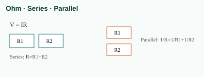
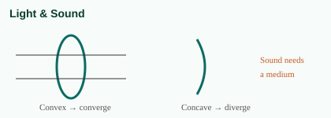
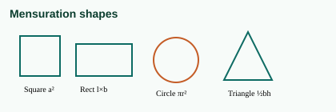
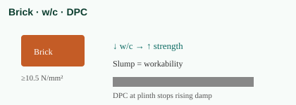
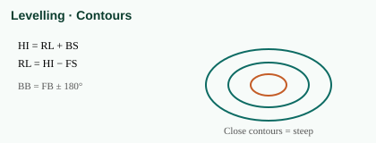
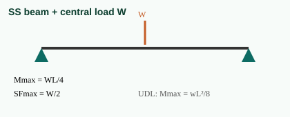
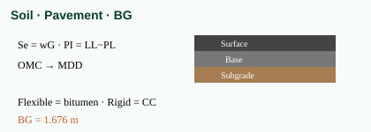
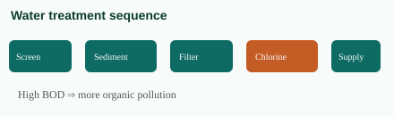

Complete Syllabus with Brief Explanation
ಸಂಪೂರ್ಣ ಪಠ್ಯಕ್ರಮ — ಸಂಕ್ಷಿಪ್ತ ವಿವರಣೆ + ಚಿತ್ರಗಳು
Truth: One casual read ≠ every question. Mastery (3× notes + formulas + 500 MCQs + timed mocks) ≈ almost all expected CBT questions.
ನಿಜ: ಒಂದೇ ಬಾರಿ ಓದು = ಎಲ್ಲಾ ಪ್ರಶ್ನೆಗೆ ಸಾಲದು. ಮಾಸ್ಟರಿ (3× ನೋಟ್ + ಸೂತ್ರ + 500 MCQ + ಟೈಮ್ ಮಾಕ್) = ಹೆಚ್ಚಿನ CBT ಪ್ರಶ್ನೆಗಳಿಗೆ ಸಿದ್ಧ.
KRCL JE Civil · English + ಕನ್ನಡ · Readiness guide + Science→Estimation + High-yield boost + Formula sheet
Exam Readiness Truth | ಪರೀಕ್ಷಾ ಸಿದ್ಧತೆ ನಿಜ
ಒಂದೇ ಬಾರಿ ಓದು ಸಾಲದು. 3 ಬಾರಿ ನೋಟ್ + ಸೂತ್ರ + MCQ + ಮಾಕ್ = ಪರೀಕ್ಷೆಗೆ ಸಿದ್ಧ.
00. Can You Answer Any Question After One Read?
ಒಂದೇ ಬಾರಿ ಓದಿದರೆ ಎಲ್ಲಾ ಪ್ರಶ್ನೆಗೆ ಉತ್ತರ?
Straight answer | ನೇರ ಉತ್ತರ
No — reading once casually is NOT enough for every question. ಇಲ್ಲ — ಒಂದೇ ಬಾರಿ ಸರಳವಾಗಿ ಓದಿದರೆ ಎಲ್ಲಾ ಪ್ರಶ್ನೆಗೆ ಉತ್ತರ ಬರುವುದಿಲ್ಲ.
Yes — if you MASTER this pack the right way, you can attempt almost all expected CBT questions with confidence. ಹೌದು — ಈ ಪ್ಯಾಕ್ ಅನ್ನು ಸರಿಯಾಗಿ ಮಾಸ್ಟರ್ ಮಾಡಿದರೆ CBTಯಲ್ಲಿ ಬರುವ ಹೆಚ್ಚಿನ ಪ್ರಶ್ನೆಗಳಿಗೆ ಆತ್ಮವಿಶ್ವಾಸದಿಂದ ಉತ್ತರಿಸಬಹುದು.
Why? Because KRCL asks new wording / numerical twists / current affairs, not word-for-word notes. ಯಾಕೆ? ಪರೀಕ್ಷೆಯಲ್ಲಿ ಹೊಸ ವಾಕ್ಯರಚನೆ / ಅಂಕಿ ಪ್ರಶ್ನೆ / ಪ್ರಸಕ್ತ ವಿದ್ಯಮಾನ ಬರುತ್ತದೆ — ನೋಟ್ನಲ್ಲೇ ಅದೇ ವಾಕ್ಯ ಬರುವುದಿಲ್ಲ.
What this pack covers (exam map) | ಈ ಪ್ಯಾಕ್ ಏನು ಕವರ್ ಮಾಡುತ್ತದೆ
| Paper part | Q | Marks | Covered in this pack? |
|---|---|---|---|
| General Science | 10 | 30 | Yes — Class 10 basics |
| Basic Maths | 20 | 60 | Yes — formulas + methods |
| GA + Reasoning | 20 | 60 | Yes — static GA + reasoning types (GA needs daily news) |
| Technical Civil | 50 | 150 | Yes — diploma JE core + boost topics below |
| Total | 100 | 300 |
Half the paper = Technical 50Q. That is where this syllabus decides selection.
Mastery rule (do this — then you are exam-ready)
ಮಾಸ್ಟರಿ ನಿಯಮ (ಇದನ್ನು ಮಾಡಿದರೆ ಪರೀಕ್ಷೆಗೆ ಸಿದ್ಧ)
| Step | What to do | Pass mark |
|---|---|---|
| 1 | Read each topic 3 times (not once) | Can explain in Kannada + English |
| 2 | Memorize Formula sheet cold | Write all main formulas from memory |
| 3 | Solve topic MCQs (50 × 10 = 500) | ≥ 80% correct |
| 4 | Revise Must-Lock boxes daily | No peeking needed |
| 5 | Attempt Full mocks (timed 90 min) | Target 210+ / 300 |
| 6 | Daily Current Affairs 15–20 min | Awards / schemes / sports / appointments |
If Step 1–5 are done, you are ready for almost any expected question type in the paper. 1–5 ಮುಗಿಸಿದರೆ ಪೇಪರ್ನಲ್ಲಿ ಬರುವ ಹೆಚ್ಚಿನ ಪ್ರಶ್ನೆ ವಿಧಗಳಿಗೆ ಸಿದ್ಧ.
Only weak spots left after that: 1. Brand-new current affairs of last 1–2 months 2. Rare advanced numericals outside diploma JE level 3. Unexpectedly worded questions (still solvable if concept is clear)
Self-test: Are you ready? | ನೀವು ಸಿದ್ಧರೇ?
Close the book. If you can answer all 20 below, syllabus mastery is strong:
Technical (must)
1. First-class brick crushing strength? → ≥ 10.5 N/mm² 2. OPC initial / final setting time? → ≥ 30 min / ≤ 10 hr 3. Lower w/c → ? → higher strength 4. HI method formulas? → HI = RL+BS ; RL = HI−FS 5. BB related to FB? → BB = FB ± 180° 6. Contours close together mean? → steep slope 7. σ, ε, E? → P/A , δL/L , σ/ε 8. SS mid-point load Mmax / SFmax? → WL/4 , W/2 9. UDL on SS beam Mmax? → wL²/8 10. Prefer under-reinforced or over-reinforced? → under-reinforced 11. One-way slab if? → Ly/Lx > 2 12. P = ? ; Continuity? ; Bernoulli? → ρgh ; A1V1=A2V2 ; P/γ+V²/2g+z 13. Re < 2000 means? → laminar 14. Se = ? ; PI = ? → wG ; LL−PL 15. BG gauge India? → 1.676 m 16. Flexible vs Rigid pavement? → bituminous vs CC 17. Water treatment order? → Sedimentation → Filtration → Chlorination 18. High BOD means? → more organic pollution 19. Rate analysis includes? → Material + Labour + Equipment + OH + Profit 20. Fillet weld throat ≈ ? → 0.7 × size
Maths speed
- - km/h → m/s = ×5/18
- - Together days = ab/(a+b)
- - SI = PRT/100
If you miss more than 3 → revise that topic again + do 20 MCQs.
Honest score expectation | ನಿಜವಾದ ಸ್ಕೋರ್ ನಿರೀಕ್ಷೆ
| Study level | Likely score / 300 |
|---|---|
| One casual read only | 90–140 (risky) |
| Notes + formulas memorized, little MCQ | 150–190 |
| Notes 3× + 500 MCQ + formula sheet | 200–230 |
| Above + 8–12 full mocks + daily CA | 220–260+ (selection zone) |
Qualifying only is UR/EWS 50% (150) / reserved 40% (120) — but competition needs much higher. Aim 210+.
General Science | ಸಾಮಾನ್ಯ ವಿಜ್ಞಾನ
10ನೇ ತರಗತಿ ಮೂಲಭೂತ — ಘಟಕ, ನಿಯಮ ಮತ್ತು ದೈನಂದಿನ ಅರ್ಥ.



01. General Science | ಸಾಮಾನ್ಯ ವಿಜ್ಞಾನ
(Class 10 CBSE level — easy notes)
A. Physics | ಭೌತಶಾಸ್ತ್ರ
1. Motion | ಚಲನೆ
| Term | English | ಕನ್ನಡ |
|---|---|---|
| Speed | Distance / Time | ವೇಗ = ದೂರ / ಕಾಲ |
| Velocity | Displacement / Time (with direction) | ವೇಗವೇಗ = ಸ್ಥಳಾಂತರ / ಕಾಲ (ದಿಕ್ಕು ಸಹ) |
| Acceleration | Change in velocity / Time | ವೇಗವರ್ಧನೆ |
| Force | Mass × Acceleration (F = ma) | ಬಲ = ದ್ರವ್ಯರಾಶಿ × ವೇಗವರ್ಧನೆ |
Newton’s Laws (simple): 1. Object stays at rest or uniform motion unless force acts. ಬಲವಿಲ್ಲದಿದ್ದರೆ ವಸ್ತು ನಿಶ್ಚಲ ಅಥವಾ ಸಮವೇಗದಲ್ಲಿ ಉಳಿಯುತ್ತದೆ. 2. F = ma 3. Every action has equal & opposite reaction. ಪ್ರತಿ ಕ್ರಿಯೆಗೆ ಸಮ ಮತ್ತು ವಿರುದ್ಧ ಪ್ರತಿಕ್ರಿಯೆ.
2. Work, Energy, Power | ಕೆಲಸ, ಶಕ್ತಿ, ಶಕ್ತಿ (ಪವರ್)
- - Work = Force × Distance (W = F × s)
ಕೆಲಸ = ಬಲ × ದೂರ
- - Kinetic Energy = ½ mv²
ಚಲನಾತ್ಮಕ ಶಕ್ತಿ
- - Potential Energy = mgh
ಸ್ಥಿತಿ ಶಕ್ತಿ
- - Power = Work / Time
ಶಕ್ತಿ (ಪವರ್) = ಕೆಲಸ / ಕಾಲ
3. Light & Sound | ಬೆಳಕು ಮತ್ತು ಧ್ವನಿ
- - Light travels in straight line. Reflection: i = r.
ಬೆಳಕು ನೇರರೇಖೆಯಲ್ಲಿ ಹರಡುತ್ತದೆ. ಪ್ರತಿಫಲನ: i = r.
- - Convex lens → converging; Concave lens → diverging.
ಕಾನ್ವೆಕ್ಸ್ = ಒಗ್ಗೂಡಿಸುವ; ಕಾನ್ಕೇವ್ = ಹರಡುವ.
- - Sound needs medium; cannot travel in vacuum.
ಧ್ವನಿಗೆ ಮಾಧ್ಯಮ ಬೇಕು; ನಿರ್ವಾತದಲ್ಲಿ ಹೋಗುವುದಿಲ್ಲ.
- - Speed of sound in air ≈ 340 m/s.
4. Electricity | ವಿದ್ಯುತ್
| Quantity | Symbol | Unit | ಕನ್ನಡ |
|---|---|---|---|
| Current | I | Ampere (A) | ವಿದ್ಯುತ್ ಪ್ರವಾಹ |
| Voltage | V | Volt (V) | ವೋಲ್ಟೇಜ್ |
| Resistance | R | Ohm (Ω) | ರೋಧ |
| Power | P | Watt (W) | ವಿದ್ಯುತ್ ಶಕ್ತಿ |
Ohm’s Law: V = IR Series: R = R1 + R2 Parallel: 1/R = 1/R1 + 1/R2
B. Chemistry | ರಸಾಯನಶಾಸ್ತ್ರ
1. Matter | ವಸ್ತು
- - Solid, Liquid, Gas — based on particle arrangement.
ಘನ, ದ್ರವ, ಅನಿಲ — ಕಣಗಳ ಜೋಡಣೆಯಿಂದ.
- - Atom = smallest unit; Molecule = group of atoms.
ಪರಮಾಣು = ಅತಿ ಸಣ್ಣ ಘಟಕ; ಅಣು = ಪರಮಾಣುಗಳ ಗುಂಪು.
2. Acids, Bases, Salts | ಆಮ್ಲ, ಕ್ಷಾರ, ಲವಣ
| Type | Example | Indicator |
|---|---|---|
| Acid | HCl, Lemon | Blue litmus → Red |
| Base | NaOH, Soap | Red litmus → Blue |
| Salt | NaCl | Neutral often |
pH < 7 = Acidic | pH = 7 = Neutral | pH > 7 = Basic ಆಮ್ಲೀಯ | ತಟಸ್ಥ | ಕ್ಷಾರೀಯ
3. Metals & Non-metals | ಲೋಹ ಮತ್ತು ಅಲೋಹ
- - Metals: shiny, conductors, malleable.
ಲೋಹ: ಹೊಳಪು, ವಾಹಕ, ಮುದುಡಬಹುದು.
- - Non-metals: dull, poor conductors.
ಅಲೋಹ: ಮಂದ, ಕಳಪೆ ವಾಹಕ.
- - Alloys: Brass (Cu+Zn), Steel (Fe+C).
ಮಿಶ್ರಲೋಹ: ಹಿತ್ತಾಳೆ, ಉಕ್ಕು.
4. Chemical Reactions | ರಾಸಾಯನಿಕ ಕ್ರಿಯೆಗಳು
- - Combination, Decomposition, Displacement, Double displacement, Redox.
ಸಂಯೋಜನೆ, ವಿಭಜನೆ, ಸ್ಥಾನಾಂತರ, ದ್ವಿಗುಣ ಸ್ಥಾನಾಂತರ, ರೆಡಾಕ್ಸ್.
- - Corrosion = rusting of iron (needs air + moisture).
ತುಕ್ಕು = ಕಬ್ಬಿಣಕ್ಕೆ ಗಾಳಿ + ತೇವ.
C. Biology | ಜೀವಶಾಸ್ತ್ರ
1. Life processes | ಜೀವ ಪ್ರಕ್ರಿಯೆಗಳು
- - Nutrition, Respiration, Transportation, Excretion.
ಪೋಷಣೆ, ಉಸಿರಾಟ, ಸಾಗಣೆ, ವಿಸರ್ಜನೆ.
- - Photosynthesis: CO₂ + H₂O → Glucose + O₂ (in sunlight, chlorophyll).
ದ್ಯುತಿಸಂಶ್ಲೇಷಣೆ: ಸೂರ್ಯನ ಬೆಳಕಿನಲ್ಲಿ ಸಸ್ಯಗಳು ಆಹಾರ ತಯಾರಿಸುತ್ತವೆ.
2. Human systems (basic) | ಮಾನವ ವ್ಯವಸ್ಥೆ
- - Heart pumps blood; Lungs exchange gases.
ಹೃದಯ ರಕ್ತವನ್ನು ಪಂಪ್ ಮಾಡುತ್ತದೆ; ಶ್ವಾಸಕೋಶ ಅನಿಲ ವಿನಿಮಯ.
- - Brain controls body; Kidneys purify blood.
ಮೆದುಳು ನಿಯಂತ್ರಣ; ಮೂತ್ರಪಿಂಡ ರಕ್ತ ಶುದ್ಧೀಕರಣ.
3. Environment | ಪರಿಸರ
- - Food chain: Producer → Consumer → Decomposer.
ಆಹಾರ ಸರಪಳಿ: ಉತ್ಪಾದಕ → ಗ್ರಾಹಕ → ವಿಭಜಕ.
- - Ozone protects from UV; CFCs damage ozone.
ಓಝೋನ್ UV ರಕ್ಷಣೆ; CFC ಹಾನಿ.
- - Greenhouse gases: CO₂, CH₄ → global warming.
ಹಸಿರುಮನೆ ಅನಿಲಗಳು → ಜಾಗತಿಕ ತಾಪಮಾನ ಏರಿಕೆ.
Quick MCQ Tips | ತ್ವರಿತ ಸಲಹೆ
1. Remember units and formulas — exams love them. 2. Memorize common reactions (rusting, photosynthesis, acids-bases). 3. Revise electricity + light diagrams mentally.
ಅಭ್ಯಾಸ: ಪ್ರತಿ ವಾರ 20 ವಿಜ್ಞಾನ MCQ ಬಿಡಿಸಿ.
Basic Mathematics | ಮೂಲಭೂತ ಗಣಿತ
ವೇಗಕ್ಕಾಗಿ ಸೂತ್ರಗಳು: ಮೊದಲು ಘಟಕ ಪರಿವರ್ತನೆ, ನಂತರ ಸರಿಯಾದ ಸೂತ್ರ.

02. Basic Mathematics | ಮೂಲಭೂತ ಗಣಿತ
Easy formulas + bilingual meaning
1. Number System | ಸಂಖ್ಯಾ ವ್ಯವಸ್ಥೆ
- - Natural: 1,2,3… | ಪ್ರಾಕೃತಿಕ ಸಂಖ್ಯೆಗಳು
- - Whole: 0,1,2… | ಪೂರ್ಣ ಸಂಖ್ಯೆಗಳು
- - Integers: …-2,-1,0,1,2… | ಪೂರ್ಣಾಂಕಗಳು
- - Rational: p/q form | ಭಿನ್ನರಾಶಿ ರೂಪ
- - Even / Odd / Prime / Composite
ಸಮ / ಬೆಸ / ಅವಿಭಾಜ್ಯ / ಸಂಯುಕ್ತ
Divisibility (quick):
- - 2: last digit even | ಕೊನೆಯ ಅಂಕಿ ಸಮ
- - 3: digit sum ÷ 3 | ಅಂಕಿಗಳ ಮೊತ್ತ ÷ 3
- - 5: ends with 0 or 5 | 0 ಅಥವಾ 5ರಿಂದ ಮುಗಿಯುತ್ತದೆ
- - 9: digit sum ÷ 9
2. BODMAS | ಬೋಡ್ಮಾಸ್
Bracket → Of/Order → Division → Multiplication → Addition → Subtraction ಕಂಪನ → ಘಾತ → ಭಾಗ → ಗುಣ → ಸಂಕಲನ → ವ್ಯವಕಲನ
Example: 10 + 2 × 3 = 10 + 6 = 16 (not 36)
3. Decimals & Fractions | ದಶಾಂಶ ಮತ್ತು ಭಿನ್ನರಾಶಿ
- - Fraction → Decimal: divide numerator by denominator.
ಭಿನ್ನರಾಶಿ → ದಶಾಂಶ: ಅಂಶ ÷ ಛೇದ
- - a/b + c/d = (ad + bc)/bd
- - a/b × c/d = ac/bd
- - a/b ÷ c/d = a/b × d/c
4. LCM & HCF | ಲಘುತಮ ಸಮಾಪವರ್ತನೀಯ & ಮಹತ್ತಮ ಸಾಮಾನ್ಯ ಅಪವರ್ತಕ
- - HCF × LCM = Product of two numbers (for two numbers)
HCF × LCM = ಎರಡು ಸಂಖ್ಯೆಗಳ ಗುಣಲಬ್ಧ
- - Use prime factorization method for speed.
5. Ratio & Proportion | ಅನುಪಾತ ಮತ್ತು ಸಮಾನುಪಾತ
- - a : b = a/b
- - If a:b = c:d then ad = bc (cross multiply)
ಅಡ್ಡ ಗುಣಲಬ್ಧ ಸಮ
- - Direct proportion: x ↑ then y ↑
ನೇರ ಸಮಾನುಪಾತ
- - Inverse: x ↑ then y ↓
ವ್ಯುತ್ಕ್ರಮ ಸಮಾನುಪಾತ
6. Percentages | ಶೇಕಡಾವಾರು
- - x% of N = (x/100) × N
- - Increase by x%: New = N(1 + x/100)
- - Decrease by x%: New = N(1 − x/100)
- - Successive: a% then b% → net = a + b + (ab/100)
Memory tip: 10% = 1/10, 25% = 1/4, 50% = 1/2, 12.5% = 1/8
7. Mensuration | ಮಾಪನಶಾಸ್ತ್ರ (ಆಕಾರಗಳು)
| Shape | Area / Perimeter | ಕನ್ನಡ |
|---|---|---|
| Square | A = a², P = 4a | ಚೌಕ |
| Rectangle | A = l×b, P = 2(l+b) | ಆಯತ |
| Triangle | A = ½ × b × h | ತ್ರಿಭುಜ |
| Circle | A = πr², C = 2πr | ವೃತ್ತ |
| Cube | V = a³, TSA = 6a² | ಘನ |
| Cuboid | V = lbh | ಘನಾಕೃತಿ |
| Cylinder | V = πr²h, CSA = 2πrh | ಸಿಲಿಂಡರ್ |
| Cone | V = (1/3)πr²h | ಶಂಕು |
| Sphere | V = (4/3)πr³, A = 4πr² | ಗೋಳ |
Use π = 22/7 or 3.14
8. Time & Work | ಕಾಲ ಮತ್ತು ಕೆಲಸ
- - If A does work in a days → 1 day work = 1/a
A, a ದಿನದಲ್ಲಿ ಮುಗಿಸಿದರೆ ದಿನಕ್ಕೆ = 1/a
- - A + B together: 1/a + 1/b
- - Days together = 1 / (1/a + 1/b) = ab/(a+b)
9. Time & Distance | ಕಾಲ ಮತ್ತು ದೂರ
- - Distance = Speed × Time
ದೂರ = ವೇಗ × ಕಾಲ
- - Average speed (same distance) = 2xy/(x+y)
- - km/h → m/s: × 5/18
- - m/s → km/h: × 18/5
10. Simple & Compound Interest | ಸರಳ ಮತ್ತು ಚಕ್ರಬಡ್ಡಿ
SI = (P × R × T) / 100 ಸರಳ ಬಡ್ಡಿ
CI = P(1 + R/100)^T − P ಚಕ್ರಬಡ್ಡಿ
Amount (SI) = P + SI
11. Profit & Loss | ಲಾಭ ಮತ್ತು ನಷ್ಟ
- - Profit = SP − CP
ಲಾಭ = ಮಾರಾಟ ಬೆಲೆ − ವೆಚ್ಚ ಬೆಲೆ
- - Loss = CP − SP
- - Profit% = (Profit/CP) × 100
- - SP = CP × (100 + Profit%)/100
- - Discount = MP − SP
12. Algebra | ಬೀಜಗಣಿತ
- - (a+b)² = a² + 2ab + b²
- - (a−b)² = a² − 2ab + b²
- - a² − b² = (a−b)(a+b)
- - (a+b)³ = a³ + b³ + 3ab(a+b)
- - Linear: ax + b = 0 → x = −b/a
- - Quadratic: ax² + bx + c = 0 → x = [−b ± √(b²−4ac)] / 2a
13. Geometry | ಜ್ಯಾಮಿತಿ
- - Sum of angles in triangle = 180°
ತ್ರಿಭುಜದ ಕೋನಗಳ ಮೊತ್ತ = 180°
- - Straight line = 180°, Full circle = 360°
- - Pythagoras: a² + b² = c² (right triangle)
ಪೈಥಾಗರಸ್ ಪ್ರಮೇಯ
- - Similar triangles → corresponding sides proportional.
14. Trigonometry | ತ್ರಿಕೋನಮಿತಿ
| Ratio | Formula | ಕನ್ನಡ |
|---|---|---|
| sin θ | Opposite / Hypotenuse | ವಿರುದ್ಧ / ಕರ್ಣ |
| cos θ | Adjacent / Hypotenuse | ಪಾರ್ಶ್ವ / ಕರ್ಣ |
| tan θ | Opposite / Adjacent | ವಿರುದ್ಧ / ಪಾರ್ಶ್ವ |
| cosec | 1/sin | |
| sec | 1/cos | |
| cot | 1/tan |
Must remember:
- - sin²θ + cos²θ = 1
- - sin 0=0, 30=1/2, 45=1/√2, 60=√3/2, 90=1
- - cos 0=1, 30=√3/2, 45=1/√2, 60=1/2, 90=0
- - tan 45 = 1
15. Elementary Statistics | ಪ್ರಾಥಮಿಕ ಅಂಕಿಅಂಶ
- - Mean (Average) = Sum / n
ಸರಾಸರಿ
- - Median = middle value (after sorting)
ಮಧ್ಯಾಂಕ
- - Mode = most frequent value
ಬಹುಲಕ
16. Square Root | ವರ್ಗಮೂಲ
- - √144 = 12, √169 = 13, √196 = 14, √225 = 15
- - Memorize squares 1–30 for speed.
17. Age | ವಯಸ್ಸು
- - If present ages A:B = m:n and after t years ratio p:q:
Use: (A+t)/(B+t) = p/q
- - Age difference remains constant.
ವಯಸ್ಸಿನ ವ್ಯತ್ಯಾಸ ಸ್ಥಿರ.
18. Calendar & Clock | ಕ್ಯಾಲೆಂಡರ್ ಮತ್ತು ಗಡಿಯಾರ
Calendar:
- - Ordinary year = 1 odd day; Leap year = 2 odd days.
ಸಾಮಾನ್ಯ ವರ್ಷ = 1 ಅಸಮ ದಿನ; ಅಧಿಕ ವರ್ಷ = 2
- - 7 odd days = 1 week.
Clock:
- - Minute hand gains 5.5° per minute on hour hand.
- - Right angle = 90°, Straight = 180°.
- - Angle = |30H − 5.5M|
19. Pipes & Cistern | ಪೈಪ್ ಮತ್ತು ಟ್ಯಾಂಕ್
- - Inlet fills: +1/a per hour
ತುಂಬುವ ಪೈಪ್
- - Outlet empties: −1/b per hour
ಖಾಲಿ ಮಾಡುವ ಪೈಪ್
- - Net work = 1/a − 1/b
- - Time to fill = 1 / net
Daily Practice Target | ದೈನಂದಿನ ಗುರಿ
- - 30 Maths MCQs every day.
ಪ್ರತಿದಿನ 30 ಗಣಿತ ಪ್ರಶ್ನೆಗಳು.
- - Keep formula sheet beside you while solving.
ಸೂತ್ರ ಪಟ್ಟಿ ಬಳಿ ಇಟ್ಟುಕೊಂಡು ಅಭ್ಯಾಸ ಮಾಡಿ.
GA & Reasoning | ಸಾಮಾನ್ಯ ಜ್ಞಾನ ಮತ್ತು ತರ್ಕ
ಸಾಮಾನ್ಯ ಜ್ಞಾನ = ನೆನಪು. ತರ್ಕ = ನಿಯಮ ಹುಡುಕಿ; ಯಾವಾಗಲೂ ಸ್ಕೆಚ್ ಹಾಕಿ.

03. General Awareness & Reasoning
ಸಾಮಾನ್ಯ ಜ್ಞಾನ ಮತ್ತು ತರ್ಕಶಕ್ತಿ
PART A — General Awareness | ಸಾಮಾನ್ಯ ಜ್ಞಾನ
1. Current Affairs | ಚಾಲ್ತಿ ವಿದ್ಯಮಾನಗಳು
What to follow daily | ಪ್ರತಿದಿನ ಏನು ನೋಡಬೇಕು
- - National & International news | ರಾಷ್ಟ್ರೀಯ / ಅಂತರರಾಷ್ಟ್ರೀಯ
- - Awards, Sports, Appointments | ಪ್ರಶಸ್ತಿ, ಕ್ರೀಡೆ, ನೇಮಕ
- - Government schemes | ಸರ್ಕಾರಿ ಯೋಜನೆಗಳು
- - Science & Tech launches | ವಿಜ್ಞಾನ-ತಂತ್ರಜ್ಞಾನ
- - Budget / RBI / important indices | ಬಜೆಟ್ / ಆರ್ಬಿಐ
Source tip: One newspaper + monthly current affairs PDF.
2. Indian Geography | ಭಾರತದ ಭೂಗೋಳ
| Topic | Key points | ಕನ್ನಡ |
|---|---|---|
| Himalayas | Northern mountains | ಹಿಮಾಲಯ |
| Plains | Indo-Gangetic plain | ಸಮತಟ್ಟು ಪ್ರದೇಶ |
| Plateau | Deccan plateau | ಡೆಕ್ಕನ್ ಪ್ರಸ್ಥಭೂಮಿ |
| Rivers | Ganga, Yamuna, Godavari, Krishna, Kaveri, Narmada | ಪ್ರಮುಖ ನದಿಗಳು |
| Climate | Monsoon based | ಮಾನ್ಸೂನ್ |
| Soils | Alluvial, Black, Red, Laterite | ಮಣ್ಣುಗಳು |
| Minerals | Coal, Iron, Bauxite, Mica | ಖನಿಜಗಳು |
Karnataka focus (useful): Western Ghats, Kaveri, Tungabhadra, iron ore (Bellary), coffee (Kodagu).
3. History & Freedom Struggle | ಇತಿಹಾಸ ಮತ್ತು ಸ್ವಾತಂತ್ರ್ಯ ಸಂಗ್ರಾಮ
Ancient: Indus Valley, Vedic, Maurya (Ashoka), Gupta ಪ್ರಾಚೀನ: ಸಿಂಧೂ, ವೈದಿಕ, ಮೌರ್ಯ, ಗುಪ್ತ
Medieval: Delhi Sultanate, Mughals, Vijayanagara ಮಧ್ಯಕಾಲೀನ: ದಿಲ್ಲಿ ಸುಲ್ತಾನರು, ಮೊಘಲರು, ವಿಜಯನಗರ
Modern / Freedom:
- - 1857 Revolt | 1857ರ ದಂಗೆ
- - Indian National Congress (1885) | ಭಾರತೀಯ ರಾಷ್ಟ್ರೀಯ ಕಾಂಗ್ರೆಸ್
- - Partition of Bengal (1905), Swadeshi
- - Non-Cooperation (1920), Civil Disobedience (1930), Quit India (1942)
ಸಹಕರಿಸದಿರುವುದು, ನಾಗರಿಕ ಅಸಹಕಾರ, ಭಾರತ ಬಿಟ್ಟು ತೊಲಗಿ
- - Independence: 15 Aug 1947 | ಸ್ವಾತಂತ್ರ್ಯ: 15 ಆಗಸ್ಟ್ 1947
Leaders: Gandhi, Nehru, Patel, Bose, Ambedkar, Bhagat Singh, Tilak, Rani Chennamma, Kittur.
4. Indian Polity & Constitution | ಭಾರತೀಯ ರಾಜ್ಯಶಾಸ್ತ್ರ ಮತ್ತು ಸಂವಿಧಾನ
| Item | Fact | ಕನ್ನಡ |
|---|---|---|
| Constitution adopted | 26 Nov 1949 | ಅಂಗೀಕಾರ |
| Came into force | 26 Jan 1950 | ಜಾರಿ |
| Drafting Committee | Dr. B.R. Ambedkar | ಕರಡು ಸಮಿತಿ |
| Parts / Schedules | 25 Parts (approx), 12 Schedules | ಭಾಗ / ಅನುಸೂಚಿ |
| Fundamental Rights | Part III | ಮೂಲಭೂತ ಹಕ್ಕುಗಳು |
| DPSP | Part IV | ನಿರ್ದೇಶಕ ತತ್ವಗಳು |
| President | Head of State | ರಾಷ್ಟ್ರಪತಿ |
| PM | Head of Government | ಪ್ರಧಾನ ಮಂತ್ರಿ |
| Parliament | Lok Sabha + Rajya Sabha | ಸಂಸತ್ತು |
| Supreme Court | Highest court | ಸರ್ವೋಚ್ಚ ನ್ಯಾಯಾಲಯ |
Articles to remember: 14 (Equality), 19 (Freedom), 21 (Life), 32 (Constitutional remedies), 368 (Amendment).
5. Indian Economy | ಭಾರತೀಯ ಆರ್ಥಿಕತೆ
- - GDP, Inflation, Fiscal deficit — basic meaning.
ಜಿಡಿಪಿ, ಹಣದುಬ್ಬರ, ಹಣಕಾಸು ಕೊರತೆ
- - RBI = Central Bank | ಭಾರತೀಯ ರಿಸರ್ವ್ ಬ್ಯಾಂಕ್
- - Five Year Plans (historical), NITI Aayog (now)
- - Sectors: Primary (agri), Secondary (industry), Tertiary (services)
ಕೃಷಿ, ಕೈಗಾರಿಕೆ, ಸೇವೆ
- - Important: GST, Digital India, Make in India
6. Environment | ಪರಿಸರ
- - Pollution types: Air, Water, Soil, Noise
ವಾಯು, ಜಲ, ಮಣ್ಣು, ಧ್ವನಿ ಮಾಲಿನ್ಯ
- - Climate change, Biodiversity, Wildlife sanctuaries
ಹವಾಮಾನ ಬದಲಾವಣೆ, ಜೈವಿಕ ವೈವಿಧ್ಯ
- - Important: Paris Agreement, Kyoto Protocol, IPCC
- - India: Project Tiger, National Parks (Bandipur, Kaziranga, Gir)
7. Sports | ಕ್ರೀಡೆ
- - Olympics, Asian Games, Cricket World Cup, Hockey
- - Major awards: Arjuna, Khel Ratna, Dronacharya
- - Know recent winners for current affairs.
8. Science & Technology | ವಿಜ್ಞಾನ ಮತ್ತು ತಂತ್ರಜ್ಞಾನ
- - ISRO missions (Chandrayaan, Gaganyaan, Aditya)
- - Nuclear energy basics, Renewable energy
- - Internet, AI, 5G — one-line awareness.
PART B — Reasoning | ತರ್ಕಶಕ್ತಿ
1. Analogies | ಸಾದೃಶ್ಯ
Find relationship: A : B :: C : ? ಉದಾ: Doctor : Hospital :: Teacher : School
2. Series | ಶ್ರೇಣಿ
- - Number series: find pattern (+2, ×2, squares, primes…)
ಸಂಖ್ಯಾ ಶ್ರೇಣಿ
- - Alphabet series: position A=1 … Z=26
ವರ್ಣಮಾಲಾ ಶ್ರೇಣಿ
3. Coding–Decoding | ಸಂಕೇತೀಕರಣ
- - Letter +1 / −1 shifts
- - Reverse alphabet (A↔Z)
- - Number coding of letters
Example: CAT → DBU (each letter +1)
4. Mathematical Operations | ಗಣಿತೀಯ ಕಾರ್ಯಾಚರಣೆ
If + means ×, × means −, etc. → replace symbols carefully. ಚಿಹ್ನೆಗಳ ಅರ್ಥ ಬದಲಾದರೆ ಎಚ್ಚರಿಕೆಯಿಂದ ಬದಲಾಯಿಸಿ.
5. Relationships (Blood relations) | ರಕ್ತ ಸಂಬಂಧ
Draw family tree. ಕುಟುಂಬ ವೃಕ್ಷ ಬರೆಯಿರಿ.
- - Mother’s brother = Maternal uncle | ತಾಯಿಯ ಸಹೋದರ = ಮಾವ
- - Father’s sister = Paternal aunt | ತಂದೆಯ ಸಹೋದರಿ = ಅತ್ತೆ
6. Syllogism | ನ್ಯಾಯವಾದ
Use Venn diagrams. ವೆನ್ ಚಿತ್ರ ಬಳಸಿ.
- - All A are B; All B are C → All A are C (usually true)
- - Some / All / No — careful with “possibility”.
7. Jumbling | ವಾಕ್ಯ/ಪದ ಜೋಡಣೆ
Arrange words/sentences in logical order. ತಾರ್ಕಿಕ ಕ್ರಮದಲ್ಲಿ ಜೋಡಿಸಿ.
8. Venn Diagram | ವೆನ್ ಚಿತ್ರ
Shows common and uncommon parts of groups. ಸಮೂಹಗಳ ಸಾಮಾನ್ಯ / ಅಸಾಮಾನ್ಯ ಭಾಗ.
9. Data Interpretation & Sufficiency | ದತ್ತಾಂಶ ವಿವರಣೆ
- - Read table/graph carefully.
ಕೋಷ್ಟಕ/ಗ್ರಾಫ್ ಎಚ್ಚರಿಕೆಯಿಂದ.
- - Sufficiency: Is Statement 1 enough? Both needed?
ಹೇಳಿಕೆ ಸಾಕೇ ಅಥವಾ ಎರಡೂ ಬೇಕೇ?
10. Conclusions & Decision Making | ತೀರ್ಮಾನ ಮತ್ತು ನಿರ್ಧಾರ
- - Follow only given statements — no outside knowledge.
ಕೊಟ್ಟಿರುವ ಮಾಹಿತಿ ಮಾತ್ರ ಬಳಸಿ.
11. Similarities / Differences / Classification | ಸಾಮ್ಯ / ವ್ಯತ್ಯಾಸ / ವರ್ಗೀಕರಣ
Find odd one out. ವಿಭಿನ್ನವಾದುದನ್ನು ಹುಡುಕಿ.
12. Directions | ದಿಕ್ಕುಗಳು
N ↑ | S ↓ | E → | W ← Right turn / Left turn practice with sketch. ಸ್ಕೆಚ್ ಹಾಕಿ ಅಭ್ಯಾಸ ಮಾಡಿ.
13. Statement – Arguments / Assumptions | ವಾದ / ಊಹೆ
- - Strong argument = relevant + logical.
ಬಲವಾದ ವಾದ = ಸಂಬಂಧಿತ + ತಾರ್ಕಿಕ
- - Assumption = hidden belief needed for statement.
ಊಹೆ = ಹೇಳಿಕೆಗೆ ಅಗತ್ಯವಿರುವ ಗುಪ್ತ ನಂಬಿಕೆ
Reasoning Daily Drill | ದೈನಂದಿನ ಅಭ್ಯಾಸ
| Day | Focus |
|---|---|
| Mon | Series + Coding |
| Tue | Blood relation + Direction |
| Wed | Syllogism + Venn |
| Thu | Analogy + Classification |
| Fri | DI + Statement |
| Sat | Mixed set (25 Q) |
| Sun | Weak area revision |
ಸಲಹೆ: ಪ್ರತಿ ಪ್ರಶ್ನೆಗೆ 30–45 ಸೆಕೆಂಡ್ ಗುರಿ ಇಡಿ.
Building Materials | ಕಟ್ಟಡ ಸಾಮಗ್ರಿಗಳು
ಸಾಮಗ್ರಿ ಗುಣಮಟ್ಟವೇ ರಚನೆಯ ಬಲ ಮತ್ತು ದೀರ್ಘಕಾಲಿಕತೆಯನ್ನು ನಿರ್ಧರಿಸುತ್ತದೆ.

04. Building Materials & Construction
ಕಟ್ಟಡ ಸಾಮಗ್ರಿಗಳು ಮತ್ತು ನಿರ್ಮಾಣ
1. Bricks | ಇಟ್ಟಿಗೆಗಳು
Good brick properties | ಉತ್ತಮ ಇಟ್ಟಿಗೆಯ ಗುಣಗಳು
- - Size (common modular): 190 × 90 × 90 mm (with mortar 200 × 100 × 100)
- - Colour: deep red / copper
- - Water absorption: preferably < 20% (first class < 15–20%)
ನೀರು ಹೀರುವಿಕೆ ಕಡಿಮೆ ಇರಬೇಕು
- - Crushing strength: First class ≥ 10.5 N/mm²
ಸಂಕೋಚನ ಬಲ
- - Sound test: clear ringing sound | ಧ್ವನಿ ಪರೀಕ್ಷೆ: ಸ್ಪಷ್ಟ ಧ್ವನಿ
- - No cracks, uniform shape | ಬಿರುಕು ಇಲ್ಲದೆ, ಸಮಾನ ಆಕಾರ
Types: First class, Second class, Third class, Overburnt (Jhama), Underburnt. ವಿಧಗಳು: ಪ್ರಥಮ, ದ್ವಿತೀಯ, ತೃತೀಯ ದರ್ಜೆ, ಹೆಚ್ಚು ಸುಟ್ಟ, ಕಡಿಮೆ ಸುಟ್ಟ.
2. Stones | ಕಲ್ಲುಗಳು
| Stone | Use | ಬಳಕೆ |
|---|---|---|
| Granite | Heavy construction, flooring | ಭಾರಿ ನಿರ್ಮಾಣ |
| Marble | Flooring, decoration | ನೆಲಹಾಸು, ಅಲಂಕಾರ |
| Limestone | Cement, building | ಸಿಮೆಂಟ್, ಕಟ್ಟಡ |
| Sandstone | Building stone | ಕಟ್ಟಡ ಕಲ್ಲು |
| Slate | Roofing | ಛಾವಣಿ |
Qualities: Hard, durable, weather resistant, tough. ಗುಣಗಳು: ಗಟ್ಟಿ, ದೀರ್ಘಕಾಲಿಕ, ಹವಾಮಾನ ನಿರೋಧಕ.
3. Cement | ಸಿಮೆಂಟ್
OPC grades: 33, 43, 53 (higher grade = higher early strength) Main compounds:
- - C3S → early strength | ಪ್ರಾರಂಭಿಕ ಬಲ
- - C2S → later strength | ನಂತರದ ಬಲ
- - C3A → heat of hydration (high) | ಜಲೀಕರಣ ಉಷ್ಣ
- - C4AF → colour
Tests: Fineness, consistency, setting time, soundness, compressive strength. ಪರೀಕ್ಷೆಗಳು: ಸೂಕ್ಷ್ಮತೆ, ಸ್ಥಿರತೆ, ಹೊಂದಿಸುವ ಕಾಲ, ಧ್ವನಿತತೆ, ಸಂಕೋಚನ ಬಲ.
| Setting | Time (approx) | ಕನ್ನಡ |
|---|---|---|
| Initial | ≥ 30 min | ಪ್ರಾರಂಭಿಕ |
| Final | ≤ 600 min (10 hr) | ಅಂತಿಮ |
Types: OPC, PPC, Rapid hardening, Low heat, Sulphate resisting, White cement. ವಿಧಗಳು: ಸಾಮಾನ್ಯ, ಪೋರ್ಟ್ಲ್ಯಾಂಡ್ ಪೊಝೊಲಾನ, ವೇಗವಾಗಿ ಗಟ್ಟಿಯಾಗುವ, ಕಡಿಮೆ ಉಷ್ಣ, ಸಲ್ಫೇಟ್ ನಿರೋಧಕ.
4. Timber | ಮರ
- - Softwood / Hardwood | ಮೃದು ಮರ / ಗಟ್ಟಿ ಮರ
- - Seasoning = removing moisture | ಸೀಸನಿಂಗ್ = ತೇವ ತೆಗೆಯುವುದು
- - Defects: knots, shakes, warping, dry rot, wet rot
ದೋಷಗಳು: ಗಂಟು, ಬಿರುಕು, ವಾರ್ಪಿಂಗ್, ಕೊಳೆತ
- - Plywood, particle board, laminated wood — engineered wood products.
5. Lime | ಸುಣ್ಣ
- - Fat lime, Hydraulic lime, Poor lime
ಕೊಬ್ಬು ಸುಣ್ಣ, ಹೈಡ್ರಾಲಿಕ್ ಸುಣ್ಣ
- - Used in mortar, plaster, whitewashing.
ಮಾರ್ಟರ್, ಪ್ಲಾಸ್ಟರ್, ಬಿಳಿ ಬಣ್ಣಕ್ಕೆ ಬಳಕೆ.
6. Concrete Technology | ಕಾಂಕ್ರೀಟ್ ತಂತ್ರಜ್ಞಾನ
Water-Cement Ratio | ನೀರು-ಸಿಮೆಂಟ್ ಅನುಪಾತ
- - Lower w/c → higher strength (Abrams’ law)
ಕಡಿಮೆ w/c = ಹೆಚ್ಚು ಬಲ
- - Typical range ~ 0.4 to 0.6 for normal works.
Workability | ಕೆಲಸ ಮಾಡುವ ಸುಲಭತೆ
- - Ease of mixing, placing, compacting.
ಮಿಶ್ರಣ, ಹಾಕುವುದು, ಕಾಂಪ್ಯಾಕ್ಟ್ ಮಾಡುವ ಸುಲಭತೆ.
- - Tests: Slump test, Compaction factor, Vee-Bee.
ಸ್ಲಂಪ್ ಪರೀಕ್ಷೆ ಮುಖ್ಯ.
| Work | Slump (approx) |
|---|---|
| Road / pavement | 20–40 mm |
| Normal RCC | 50–100 mm |
| Heavily reinforced | 100–150 mm |
Admixtures | ಮಿಶ್ರಣ ಪದಾರ್ಥಗಳು
- - Plasticizers / Superplasticizers → more workability
ಪ್ಲಾಸ್ಟಿಸೈಜರ್ = ಹೆಚ್ಚು ಕೆಲಸ ಸುಲಭತೆ
- - Accelerators → faster set | ವೇಗವರ್ಧಕ
- - Retarders → slower set | ನಿಧಾನಗೊಳಿಸುವ
- - Air-entraining → freeze-thaw resistance
Mix Design | ಮಿಶ್ರಣ ವಿನ್ಯಾಸ
- - Nominal mixes: M15 (1:2:4), M20 (1:1.5:3)
- - Design mix: based on strength requirement (IS codes)
ವಿನ್ಯಾಸ ಮಿಶ್ರಣ: ಬಲಕ್ಕೆ ಅನುಗುಣವಾಗಿ
Strength Testing | ಬಲ ಪರೀಕ್ಷೆ
- - Cube 150 mm, tested at 7 & 28 days.
150 ಮಿ.ಮೀ. ಘನ, 7 ಮತ್ತು 28 ದಿನಗಳಲ್ಲಿ ಪರೀಕ್ಷೆ.
- - 28-day strength is characteristic strength reference.
28 ದಿನದ ಬಲ = ಮಾನದಂಡ.
7. Construction Practices | ನಿರ್ಮಾಣ ಅಭ್ಯಾಸಗಳು
Masonry | ಕಟ್ಟಡ ಕೆಲಸ
- - Brick masonry bonds: Stretcher, Header, English, Flemish
ಇಟ್ಟಿಗೆ ಬಾಂಡ್ಗಳು
- - Stone masonry: Rubble, Ashlar
ಕಲ್ಲು ಕಟ್ಟಡ
Flooring | ನೆಲಹಾಸು
- - Types: Cement concrete, Tile, Marble, Mosaic, Wooden, Vinyl.
ಸಿಮೆಂಟ್, ಟೈಲ್, ಮಾರ್ಬಲ್, ಮೊಸಾಯಿಕ್, ಮರ.
Roofing | ಛಾವಣಿ
- - Flat / Pitched
ಸಮತಟ್ಟು / ಇಳಿಜಾರು
- - Materials: RCC, GI sheets, Tiles, AC sheets.
Scaffolding | ಸ್ಕ್ಯಾಫೋಲ್ಡಿಂಗ್
- - Temporary structure for workers at height.
ಎತ್ತರದಲ್ಲಿ ಕೆಲಸಕ್ಕೆ ತಾತ್ಕಾಲಿಕ ರಚನೆ.
- - Types: Single, Double, Cantilever, Suspended, Trestle.
Damp Proofing (DPC) | ತೇವ ನಿರೋಧಕ
- - Prevents moisture rising into walls.
ಗೋಡೆಗಳಲ್ಲಿ ತೇವ ಏರುವುದನ್ನು ತಡೆಯುತ್ತದೆ.
- - Materials: Bitumen, Plastic sheet, Rich cement mortar, Stones.
- - DPC usually provided at plinth level.
ಸಾಮಾನ್ಯವಾಗಿ ಪ್ಲಿಂತ್ ಮಟ್ಟದಲ್ಲಿ.
Must-Remember MCQ Points | ಅನಿವಾರ್ಯ ನೆನಪು
1. First class brick strength ≥ 10.5 N/mm² 2. Initial setting time of OPC ≥ 30 min 3. Lower w/c → higher strength 4. Slump measures workability 5. DPC at plinth level
ಪ್ರಶ್ನೆ ಅಭ್ಯಾಸ: ಪ್ರತಿ ವಿಷಯಕ್ಕೆ 15 MCQ.
Surveying & Levelling | ಸಮೀಕ್ಷೆ ಮತ್ತು ಮಟ್ಟ
ಸಮೀಕ್ಷೆ ಸಾಪೇಕ್ಷ ಸ್ಥಾನ; ಮಟ್ಟ ನಿರ್ಧಾರ ಎತ್ತರ ವ್ಯತ್ಯಾಸ ಕಂಡುಹಿಡಿಯುತ್ತದೆ.

05. Surveying & Levelling
ಸಮೀಕ್ಷೆ ಮತ್ತು ಮಟ್ಟ ನಿರ್ಧಾರ
1. Basics of Surveying | ಸಮೀಕ್ಷೆಯ ಮೂಲಗಳು
Aim: Determine relative positions of points on earth. ಉದ್ದೇಶ: ಭೂಮಿಯ ಮೇಲಿನ ಬಿಂದುಗಳ ಸಾಪೇಕ್ಷ ಸ್ಥಾನ ನಿರ್ಧರಿಸುವುದು.
Principles: 1. Work from whole to part. ಒಟ್ಟುದಿಂದ ಭಾಗಕ್ಕೆ ಕೆಲಸ. 2. Locate a new point by at least two measurements. ಹೊಸ ಬಿಂದುವನ್ನು ಕನಿಷ್ಠ ಎರಡು ಅಳತೆಗಳಿಂದ.
2. Chain Surveying | ಸರಪಳಿ ಸಮೀಕ್ಷೆ
- - Suitable for small, fairly level areas.
ಸಣ್ಣ, ಸಮತಟ್ಟು ಪ್ರದೇಶಕ್ಕೆ ಸೂಕ್ತ.
- - Main instrument: Chain / Tape, Arrows, Ranging rods, Pegs.
ಸರಪಳಿ/ಟೇಪ್, ಬಾಣ, ರೇಂಜಿಂಗ್ ರಾಡ್
- - Chain length (metric): 20 m or 30 m commonly.
- - Offset: perpendicular / oblique distance from chain line to object.
ಆಫ್ಸೆಟ್ = ಸರಪಳಿ ರೇಖೆಯಿಂದ ವಸ್ತುವಿಗೆ ದೂರ.
Errors: Incorrect length, sag, temperature, slope, personal mistakes. ದೋಷಗಳು: ತಪ್ಪು ಉದ್ದ, ತೂಗುವಿಕೆ, ಉಷ್ಣತೆ, ಇಳಿಜಾರು.
3. Compass Surveying | ಕಂಪಾಸ್ ಸಮೀಕ್ಷೆ
Bearings | ದಿಕ್ಕು ಕೋನಗಳು
| System | Range | ವಿವರ |
|---|---|---|
| Whole Circle Bearing (WCB) | 0°–360° | ಪೂರ್ಣ ವೃತ್ತ |
| Quadrantal Bearing (QB) | N/S + angle + E/W | ಚತುರ್ಭುಜ |
Fore bearing & Back bearing
- - BB = FB ± 180°
ಹಿಂದಿನ ದಿಕ್ಕು = ಮುಂದಿನ ದಿಕ್ಕು ± 180°
Local Attraction | ಸ್ಥಳೀಯ ಆಕರ್ಷಣೆ
- - Magnetic disturbance due to iron, electric lines, etc.
ಕಬ್ಬಿಣ / ವಿದ್ಯುತ್ ತಂತಿಗಳಿಂದ ಕಾಂತೀಯ ವ್ಯತ್ಯಾಸ.
- - Detected when difference of FB & BB ≠ 180°.
FB−BB ವ್ಯತ್ಯಾಸ 180° ಅಲ್ಲದಿದ್ದರೆ ಪತ್ತೆ.
Magnetic Declination: Angle between True North and Magnetic North. ಕಾಂತೀಯ ವಕ್ರತೆ: ನಿಜ ಉತ್ತರ ಮತ್ತು ಕಾಂತೀಯ ಉತ್ತರ ನಡುವಿನ ಕೋನ.
4. Levelling | ಮಟ್ಟ ನಿರ್ಧಾರ
Purpose: Find elevation of points / difference in height. ಉದ್ದೇಶ: ಎತ್ತರ / ಎತ್ತರ ವ್ಯತ್ಯಾಸ ಕಂಡುಹಿಡಿಯುವುದು.
Important terms | ಪ್ರಮುಖ ಪದಗಳು
| Term | Meaning | ಕನ್ನಡ |
|---|---|---|
| Benchmark (BM) | Fixed reference point of known RL | ಮಾನದಂಡ ಬಿಂದು |
| Reduced Level (RL) | Height above datum | ಕಡಿಮೆ ಮಾಡಿದ ಮಟ್ಟ |
| Back Sight (BS) | First reading on known point | ಹಿಂದಿನ ದೃಷ್ಟಿ |
| Fore Sight (FS) | Last reading on new point | ಮುಂದಿನ ದೃಷ್ಟಿ |
| Intermediate Sight (IS) | Readings in between | ಮಧ್ಯಂತರ |
| Height of Instrument (HI) | RL of line of sight | ಉಪಕರಣ ಎತ್ತರ |
HI method: HI = RL + BS RL of next = HI − FS (or IS)
Fly Levelling: To carry levels over long distance quickly. ಫ್ಲೈ ಲೆವೆಲಿಂಗ್: ದೂರದ ಮಟ್ಟ ವರ್ಗಾವಣೆ.
5. Contouring | ಸಮೋನ್ನತಿ ರೇಖೆಗಳು
- - Contour = line joining points of equal elevation.
ಸಮೋನ್ನತಿ = ಸಮಾನ ಎತ್ತರದ ಬಿಂದುಗಳನ್ನು ಸೇರಿಸುವ ರೇಖೆ.
- - Contour interval = vertical difference between contours.
ಸಮೋನ್ನತಿ ಅಂತರ = ಲಂಬ ವ್ಯತ್ಯಾಸ.
- - Closely spaced → steep slope | ಹತ್ತಿರ = ಕಡಿದಾದ ಇಳಿಜಾರು
- - Widely spaced → gentle slope | ದೂರ = ಮೃದು ಇಳಿಜಾರು
- - Closed contour with higher values inside → hill
ಒಳಗೆ ಹೆಚ್ಚು ಮೌಲ್ಯ = ಬೆಟ್ಟ
- - Closed with lower inside → depression
ಒಳಗೆ ಕಡಿಮೆ = ತಗ್ಗು
6. Curvature & Refraction | ವಕ್ರತೆ ಮತ್ತು ವಕ್ರೀಭವನ
- - Earth curvature makes objects appear lower.
ಭೂಮಿಯ ವಕ್ರತೆಯಿಂದ ವಸ್ತು ಕೆಳಗೆ ಕಾಣುತ್ತದೆ.
- - Correction for curvature ≈ 0.0785 D² (D in km, correction in m)
- - Refraction correction ≈ 1/7 of curvature (opposite effect)
- - Combined correction ≈ 0.0673 D²
7. Theodolite Traversing | ಥಿಯೊಡೊಲೈಟ್ ಟ್ರಾವರ್ಸಿಂಗ್
- - Theodolite measures horizontal & vertical angles.
ಸಮತಲ ಮತ್ತು ಲಂಬ ಕೋನಗಳನ್ನು ಅಳೆಯುತ್ತದೆ.
- - Traverse = series of connected survey lines.
ಟ್ರಾವರ್ಸ್ = ಸಂಪರ್ಕಿತ ಸಮೀಕ್ಷಾ ರೇಖೆಗಳ ಸರಣಿ.
- - Closed / Open traverse.
ಮುಚ್ಚಿದ / ತೆರೆದ
- - Check: sum of interior angles of closed polygon = (2n−4)×90°.
8. Tachometry | ಟಾಕೊಮೆಟ್ರಿ
- - Determines horizontal distance and elevation using stadia hairs (no chain).
ಸ್ಟೇಡಿಯಾ ಕೂದಲುಗಳಿಂದ ದೂರ ಮತ್ತು ಎತ್ತರ.
- - Distance D = Ks + C
where s = staff intercept, K = multiplying constant (often 100), C = additive constant.
9. Curve Setting | ವಕ್ರ ರೇಖೆ ನಿರ್ಧಾರ
Used in roads / railways. ರಸ್ತೆ / ರೈಲು ಮಾರ್ಗಗಳಲ್ಲಿ.
Types: Simple, Compound, Reverse, Transition, Vertical curves. ಸರಳ, ಸಂಯುಕ್ತ, ವ್ಯತ್ಯಸ್ತ, ಪರಿವರ್ತನ, ಲಂಬ ವಕ್ರಗಳು.
Simple circular curve elements:
- - R = radius | ತ್ರಿಜ್ಯ
- - Δ = deflection angle | ವಿಚಲನ ಕೋನ
- - Length L = (π R Δ)/180
- - Tangent T = R tan(Δ/2)
10. GPS & Total Station | ಜಿಪಿಎಸ್ ಮತ್ತು ಟೋಟಲ್ ಸ್ಟೇಷನ್
Total Station:
- - Combines EDM + Theodolite + microprocessor.
ದೂರ + ಕೋನ + ಕಂಪ್ಯೂಟರ್ ಸಂಯೋಜನೆ.
- - Measures distance, angles; stores coordinates.
ದೂರ, ಕೋನ, ನಿರ್ದೇಶಾಂಕಗಳು.
GPS (Global Positioning System):
- - Satellite-based positioning.
ಉಪಗ್ರಹ ಆಧಾರಿತ ಸ್ಥಾನ ನಿರ್ಧಾರ.
- - Used for large area control points, mapping.
ದೊಡ್ಡ ಪ್ರದೇಶ ನಿಯಂತ್ರಣ ಬಿಂದುಗಳಿಗೆ.
Quick Revision | ತ್ವರಿತ ಪುನರಾವರ್ತನೆ
1. Work from whole to part. 2. BB = FB ± 180°. 3. HI = RL + BS; Next RL = HI − FS. 4. Contours close = steep. 5. Total Station = angle + distance instrument.
ಸಲಹೆ: ಲೆವೆಲಿಂಗ್ ಬುಕ್ ಗಣನೆಗಳನ್ನು ಹೆಚ್ಚು ಅಭ್ಯಾಸ ಮಾಡಿ — ಪರೀಕ್ಷೆಯಲ್ಲಿ ಸುಲಭ ಅಂಕಗಳು.
Mechanics & Structures | ರಚನಾ ಎಂಜಿನಿಯರಿಂಗ್
ಭಾರದಿಂದ ಒತ್ತಡ; ಕಿರಣಕ್ಕೆ SF/BM; ಆರ್ಸಿಸಿಯಲ್ಲಿ ಉಕ್ಕು ಎಳೆತ ಹೊರುತ್ತದೆ.

06. Mechanics & Structural Engineering
ಯಾಂತ್ರಿಕತೆ ಮತ್ತು ರಚನಾ ಎಂಜಿನಿಯರಿಂಗ್
A. Strength of Materials | ವಸ್ತುಬಲಶಾಸ್ತ್ರ
1. Stress & Strain | ಒತ್ತಡ ಮತ್ತು ವಿರೂಪ
| Term | Formula | ಕನ್ನಡ |
|---|---|---|
| Stress (σ) | Force / Area = P/A | ಒತ್ತಡ |
| Strain (ε) | Change in length / Original = δL/L | ವಿರೂಪ |
| Young’s Modulus (E) | Stress / Strain = σ/ε | ಯಂಗ್ ಮಾಡ್ಯುಲಸ್ |
| Shear stress (τ) | Shear force / Area | ಕತ್ತರಿಸುವ ಒತ್ತಡ |
| Poisson’s ratio (μ) | Lateral strain / Longitudinal strain | ಪಾಯ್ಸನ್ ಅನುಪಾತ |
Elastic constants: E, G (shear modulus), K (bulk), μ ಸಂಬಂಧ: E = 2G(1+μ) = 3K(1−2μ)
Hooke’s Law: Stress ∝ Strain (within elastic limit) ಹೂಕ್ ನಿಯಮ: ಸ್ಥಿತಿಸ್ಥಾಪಕ ಮಿತಿಯಲ್ಲಿ ಒತ್ತಡ ∝ ವಿರೂಪ
2. SFD & BMD | ಕತ್ತರಿಸುವ ಬಲ ಮತ್ತು ಬಾಗುವ ಘಾತ ಚಿತ್ರಗಳು
- - Shear Force (SF): Algebraic sum of vertical forces on one side.
ಕತ್ತರಿಸುವ ಬಲ
- - Bending Moment (BM): Moment of forces about section.
ಬಾಗುವ ಘಾತ
Sign tip (common convention):
- - Sagging BM positive (simply supported midspan).
ಕೆಳಗೆ ಬಾಗುವುದು ಧನಾತ್ಮಕ (ಸಾಮಾನ್ಯ)
- - Left-up / right-down shear often positive.
Must remember shapes:
| Loading | SF shape | BM shape |
|---|---|---|
| Point load | Rectangle jump | Triangle |
| UDL | Triangle / Trapezoid | Parabola |
| UVL | Parabola | Cubic |
Relation: dM/dx = SF ; dSF/dx = −w Max BM where SF = 0.
Simply supported, span L, load W at mid:
- - Max BM = WL/4
- - Max SF = W/2
UDL w over span L:
- - Max BM = wL²/8
- - Max SF = wL/2
B. RCC Design | ಆರ್ಸಿಸಿ ವಿನ್ಯಾಸ
1. Methods | ವಿಧಾನಗಳು
| Method | Idea | ಕನ್ನಡ |
|---|---|---|
| Working Stress Method (WSM) | Permissible stress based | ಕಾರ್ಯ ಒತ್ತಡ ವಿಧಾನ |
| Limit State Method (LSM) | Safety against collapse & serviceability (preferred now) | ಮಿತಿ ಸ್ಥಿತಿ ವಿಧಾನ |
Partial safety factors (LSM common):
- - Concrete: 1.5
- - Steel: 1.15
- - Dead load: 1.5 ; Live load: 1.5 (basic combinations vary)
2. Beams | ಕಿರಣಗಳು
- - Under-reinforced → steel fails first (ductile) — preferred.
ಕಡಿಮೆ ಉಕ್ಕು = ಇಚ್ಛಿತ (ಡಕ್ಟೈಲ್)
- - Over-reinforced → concrete fails first (brittle) — avoid.
ಹೆಚ್ಚು ಉಕ್ಕು = ತಪ್ಪಿಸಿ
- - Balanced → both reach limit together.
Main steel resists tension; stirrups resist shear. ಮುಖ್ಯ ಉಕ್ಕು = ಎಳೆತ; ಸ್ಟಿರಪ್ = ಕತ್ತರಿಸುವ ಬಲ.
3. Slabs | ಫಲಕಗಳು
- - One-way slab: Ly/Lx > 2 → main steel shorter span.
ಏಕಮಾರ್ಗ ಫಲಕ
- - Two-way slab: Ly/Lx ≤ 2 → steel in both directions.
ದ್ವಿಮಾರ್ಗ ಫಲಕ
- - Thickness decided by span/depth ratios & deflection control.
4. Columns | ಕಂಬಗಳು
- - Short column vs Long (slender) column.
ಕಿರು ಕಂಬ / ಉದ್ದ ಕಂಬ
- - Axially loaded / Eccentrically loaded.
ಅಕ್ಷೀಯ / ವಿಕೇಂದ್ರೀಯ ಭಾರ
- - Lateral ties / helical reinforcement prevent buckling of bars.
ಟೈಗಳು ಬಾರ್ಗಳ ಬಾಗುವಿಕೆಯನ್ನು ತಡೆಯುತ್ತವೆ.
IS tip: Min eccentricity, min longitudinal steel ~ 0.8%, max ~ 4% (as per code practice).
5. Shear Reinforcement | ಕತ್ತರಿಸುವ ಬಲ ಬಲವರ್ಧನೆ
- - Vertical stirrups most common.
ಲಂಬ ಸ್ಟಿರಪ್ಗಳು
- - Bent-up bars also used.
ಬಾಗಿಸಿದ ಬಾರ್ಗಳು
- - Provide where shear force is high (near supports).
ಆಧಾರಗಳ ಹತ್ತಿರ ಹೆಚ್ಚು.
C. Steel Design | ಉಕ್ಕು ವಿನ್ಯಾಸ
1. Steel Sections | ಉಕ್ಕಿನ ವಿಭಾಗಗಳು
- - I-section, Channel (C), Angle (L), T, Plate, Tube, HSS.
ಐ, ಚಾನಲ್, ಕೋನ, ಟಿ, ಪ್ಲೇಟ್
- - Rolled / Built-up sections.
ರೋಲ್ಡ್ / ನಿರ್ಮಿತ ವಿಭಾಗಗಳು
2. Riveted & Welded Joints | ರಿವೆಟ್ ಮತ್ತು ವೆಲ್ಡ್ ಜಂಟ್ಗಳು
Riveted (older):
- - Strength governed by shearing / bearing / tearing of plate.
ಕತ್ತರಿಸುವ / ಒತ್ತುವ / ಹರಿಯುವ ಬಲ
Welded (common now):
- - Fillet weld / Butt weld
ಫಿಲೆಟ್ / ಬಟ್ ವೆಲ್ಡ್
- - Throat thickness for fillet = 0.7 × size (approx).
ಗಂಟಲು ದಪ್ಪ ≈ 0.7 × ಗಾತ್ರ
3. Tension Members | ಎಳೆತ ಸದಸ್ಯರು
- - Carry tensile force (e.g., bottom chord of truss).
ಎಳೆತ ಬಲ ಹೊರುವ ಸದಸ್ಯ
- - Net effective area important (deduct bolt holes).
ನಿವ್ವಳ ಪರಿಣಾಮಕಾರಿ ವಿಸ್ತೀರ್ಣ ಮುಖ್ಯ.
4. Compression Members | ಸಂಕೋಚನ ಸದಸ್ಯರು
- - Columns, struts — buckling decides capacity.
ಕಂಬ / ಸ್ಟ್ರಟ್ — ಬಾಗುವಿಕೆ ನಿರ್ಧಾರಕ
- - Slenderness ratio = Le / r
ಪತಳತೆ ಅನುಪಾತ = ಪರಿಣಾಮಕಾರಿ ಉದ್ದ / ತ್ರಿಜ್ಯ ಆಫ್ ಗೈರೇಷನ್
- - Higher slenderness → lower capacity.
ಹೆಚ್ಚು ಪತಳತೆ = ಕಡಿಮೆ ಸಾಮರ್ಥ್ಯ
Formula Snapshot | ಸೂತ್ರ ಸ್ನ್ಯಾಪ್ಶಾಟ್
1. σ = P/A ; ε = δL/L ; E = σ/ε 2. Simply supported mid point load: M = WL/4 3. UDL on SS beam: M = wL²/8 4. Prefer under-reinforced RCC beams 5. Fillet weld throat ≈ 0.7t
ಅಭ್ಯಾಸ ಸಲಹೆ: SFD/BMD ಚಿತ್ರಗಳನ್ನು ಪ್ರತಿದಿನ 2–3 ಬರೆಯಿರಿ. RCC ನಲ್ಲಿ under/over reinforced ಪರಿಕಲ್ಪನೆ ಖಚಿತವಾಗಿ ನೆನಪಿಡಿ.
Fluids & Hydraulics | ದ್ರವ ಯಾಂತ್ರಿಕತೆ
ಆಳದೊಂದಿಗೆ ಒತ್ತಡ ಏರುತ್ತದೆ; ನಿರಂತರತೆ ಮತ್ತು ಬರ್ನೂಲಿ ಪೈಪ್ ಹರಿವನ್ನು ನಿರ್ವಹಿಸುತ್ತವೆ.

07. Fluid Mechanics & Hydraulics
ದ್ರವ ಯಾಂತ್ರಿಕತೆ ಮತ್ತು ಜಲಶಾಸ್ತ್ರ
1. Fluid Properties | ದ್ರವದ ಗುಣಗಳು
| Property | Meaning | ಕನ್ನಡ |
|---|---|---|
| Density (ρ) | Mass / Volume | ಸಾಂದ್ರತೆ |
| Specific weight (γ) | Weight / Volume = ρg | ನಿರ್ದಿಷ್ಟ ತೂಕ |
| Specific gravity (S) | Density of fluid / Density of water | ನಿರ್ದಿಷ್ಟ ಗುರುತ್ವ |
| Viscosity (μ) | Resistance to flow (internal friction) | ಸ್ನಿಗ್ಧತೆ |
| Kinematic viscosity (ν) | μ/ρ | ಚಲನ ಸ್ನಿಗ್ಧತೆ |
| Surface tension (σ) | Force along surface per unit length | ಪೊರೆ ಒತ್ತಡ |
| Capillarity | Rise/fall in narrow tube | ಕ್ಯಾಪಿಲರಿ |
Water (standard): ρ ≈ 1000 kg/m³ ; S = 1 ; γ ≈ 9810 N/m³
2. Fluid Pressure | ದ್ರವ ಒತ್ತಡ
- - Pressure P = ρ g h = γ h
ಒತ್ತಡ = ಸಾಂದ್ರತೆ × g × ಆಳ
- - Pressure increases with depth.
ಆಳ ಹೆಚ್ಚಾದಂತೆ ಒತ್ತಡ ಹೆಚ್ಚು.
- - Absolute = Atmospheric + Gauge
ಪರಿಪೂರ್ಣ = ವಾತಾವರಣ + ಗೇಜ್
- - Vacuum pressure = Atmospheric − Absolute
Measurement devices: Piezometer, Manometer, Bourdon gauge, Pressure transducer. ಪೈಝೋಮೀಟರ್, ಮ್ಯಾನೋಮೀಟರ್, ಬೌರ್ಡನ್ ಗೇಜ್.
3. Continuity Equation | ನಿರಂತರತೆ ಸಮೀಕರಣ
For incompressible fluid: A1 V1 = A2 V2 = Q (discharge)
ವಿಸ್ತೀರ್ಣ × ವೇಗ = ಸ್ರಾವ (ನಿರಂತರ)
Meaning: When area decreases, velocity increases. ವಿಸ್ತೀರ್ಣ ಕಡಿಮೆಯಾದರೆ ವೇಗ ಹೆಚ್ಚು.
4. Bernoulli’s Theorem | ಬರ್ನೂಲಿ ಪ್ರಮೇಯ
Along a streamline (ideal fluid): P/γ + V²/2g + z = constant
| Term | Name | ಕನ್ನಡ |
|---|---|---|
| P/γ | Pressure head | ಒತ್ತಡ ಶಿರ |
| V²/2g | Velocity head | ವೇಗ ಶಿರ |
| z | Datum / elevation head | ಎತ್ತರ ಶಿರ |
Practical: Venturimeter, Orificemeter, Pitot tube use Bernoulli. ವೆಂಚುರಿ, ಒರಿಫಿಸ್, ಪಿಟಾಟ್ ಟ್ಯೂಬ್.
5. Flow Through Pipes | ಪೈಪ್ಗಳಲ್ಲಿ ಹರಿವು
Darcy–Weisbach head loss: hf = (f L V²) / (2 g D)
| Symbol | Meaning | ಅರ್ಥ |
|---|---|---|
| f | Friction factor | ಘರ್ಷಣ ಅಂಶ |
| L | Length | ಉದ್ದ |
| V | Velocity | ವೇಗ |
| D | Diameter | ವ್ಯಾಸ |
Other losses: Entry, Exit, Bend, Sudden enlargement/contraction. ಪ್ರವೇಶ, ನಿರ್ಗಮನ, ಬಾಗುವಿಕೆ, ಹಠಾತ್ ವಿಸ್ತರಣ/ಸಂಕೋಚನ.
Laminar vs Turbulent:
- - Reynolds number Re = ρVD/μ
- - Re < 2000 → Laminar | ಪದರೀಯ
- - Re > 4000 → Turbulent | ಪ್ರಕ್ಷುಬ್ಧ
6. Open Channel Flow | ತೆರೆದ ಕಾಲುವೆ ಹರಿವು
- - Flow with free surface (canals, rivers).
ಮುಕ್ತ ಮೇಲ್ಮೈಯ ಹರಿವು (ಕಾಲುವೆ, ನದಿ)
- - Chezy: V = C √(m i)
- - Manning: V = (1/n) R^(2/3) S^(1/2)
n = roughness coefficient | ಒರಟುತನ ಗುಣಾಂಕ
- - Most economical rectangular section: Depth = Width/2
ಅತ್ಯಂತ ಆರ್ಥಿಕ ಆಯತಾಕಾರ: ಆಳ = ಅಗಲ/2
7. Hydrology Basics | ಜಲವಿಜ್ಞಾನ ಮೂಲಗಳು
Rainfall measurement | ಮಳೆ ಅಳತೆ
- - Instrument: Rain gauge (Symon’s gauge common in India)
ಮಳೆಮಾಪಕ
- - Intensity = rainfall / time
ತೀವ್ರತೆ = ಮಳೆ / ಕಾಲ
Run-off | ಹರಿವು (ರನ್-ಆಫ್)
- - Portion of rainfall that flows on surface.
ಮಳೆಯಲ್ಲಿ ಮೇಲ್ಮೈಯಲ್ಲಿ ಹರಿಯುವ ಭಾಗ.
- - Depends on: slope, soil, vegetation, rainfall intensity.
ಇಳಿಜಾರು, ಮಣ್ಣು, ಸಸ್ಯವರ್ಗ, ಮಳೆ ತೀವ್ರತೆ.
- - Run-off = Rainfall − Losses (infiltration, evaporation, interception)
Crop Water Requirement | ಬೆಳೆ ನೀರಿನ ಅಗತ್ಯ
- - Delta (Δ) = total water depth required by crop.
ಡೆಲ್ಟಾ = ಬೆಳೆಗೆ ಬೇಕಾದ ಒಟ್ಟು ನೀರಿನ ಆಳ
- - Duty (D) = area irrigated by unit discharge.
ಡ್ಯೂಟಿ = ಘಟಕ ಸ್ರಾವದಿಂದ ನೀರಾವರಿ ವಿಸ್ತೀರ್ಣ
- - Relation: Δ = 8.64 B / D (B = base period in days; units consistent)
(Common exam relation — remember with correct units as taught)
Base period: Time from first to last watering of crop. ಬೇಸ್ ಪೀರಿಯಡ್ = ಮೊದಲಿನಿಂದ ಕೊನೆಯ ನೀರಾವರಿ ಕಾಲ.
8. Basic Irrigation Structures | ಮೂಲ ನೀರಾವರಿ ರಚನೆಗಳು
| Structure | Function | ಕಾರ್ಯ |
|---|---|---|
| Weir / Barrage | Raise water level / divert | ನೀರಿನ ಮಟ್ಟ ಏರಿಸುವ / ತಿರುಗಿಸುವ |
| Canal | Convey irrigation water | ಕಾಲುವೆ |
| Head regulator | Control entry to canal | ಪ್ರವೇಶ ನಿಯಂತ್ರಣ |
| Cross drainage | Canal crosses drain/river | ಅಡ್ಡ ಜಲನಿರ್ಗಮನ |
| Escape | Remove surplus water | ಹೆಚ್ಚುವರಿ ನೀರು ತೆಗೆಯುವುದು |
| Outlet | Supply to field channel | ಹೊಲಕ್ಕೆ ನೀರು |
Must Score Points | ಅನಿವಾರ್ಯ ಅಂಕಗಳು
1. P = ρgh 2. A1V1 = A2V2 3. Bernoulli: P/γ + V²/2g + z = const 4. Re decides laminar/turbulent 5. Rain gauge measures rainfall
ಅಭ್ಯಾಸ: ಬರ್ನೂಲಿ ಮತ್ತು ನಿರಂತರತೆ ಸಮೀಕರಣದ ಸಂಖ್ಯಾತ್ಮಕ ಪ್ರಶ್ನೆಗಳು ಹೆಚ್ಚು ಬರುತ್ತವೆ.
Geotech & Transport | ಭೂತಾಂತ್ರಿಕ / ಸಾರಿಗೆ
ಮಣ್ಣು ಗುಣ ಅಡಿಪಾಯ ನಿರ್ಧರಿಸುತ್ತದೆ; ಹೆದ್ದಾರಿ/ರೈಲಿಗೆ ಸುರಕ್ಷಿತ ಜ್ಯಾಮಿತಿ ಬೇಕು.

08. Geotechnical & Transportation Engineering
ಭೂತಾಂತ್ರಿಕ ಮತ್ತು ಸಾರಿಗೆ ಎಂಜಿನಿಯರಿಂಗ್
PART A — Soil Mechanics | ಮಣ್ಣು ಯಾಂತ್ರಿಕತೆ
1. Index Properties | ಸೂಚಕ ಗುಣಗಳು
| Property | Meaning | ಕನ್ನಡ |
|---|---|---|
| Water content (w) | Ww / Ws × 100 | ಜಲಾಂಶ |
| Specific gravity (G) | Soil solids density / water | ನಿರ್ದಿಷ್ಟ ಗುರುತ್ವ |
| Void ratio (e) | Vv / Vs | ಶೂನ್ಯ ಅನುಪಾತ |
| Porosity (n) | Vv / V | ರಂಧ್ರತೆ |
| Degree of saturation (S) | Vw / Vv | ಸಂತೃಪ್ತಿ ಮಟ್ಟ |
| Bulk density / Dry density | Mass related | ಸಾಂದ್ರತೆ |
Relation: e = n/(1−n) ; S e = w G (important exam formula)
2. Grain Size Distribution | ಕಣ ಗಾತ್ರ ವಿತರಣೆ
- - Coarse soil: Gravels, Sands — sieve analysis.
ಒರಟು ಮಣ್ಣು: ಜಲ್ಲಿ, ಮರಳು — ಜರಡಿ ವಿಶ್ಲೇಷಣೆ
- - Fine soil: Silts, Clays — sedimentation (hydrometer).
ಸೂಕ್ಷ್ಮ: ಹೂಳು, ಜೇಡಿಮಣ್ಣು
- - Well graded vs Poorly graded.
ಚೆನ್ನಾಗಿ ವರ್ಗೀಕೃತ / ಕಳಪೆ ವರ್ಗೀಕೃತ
- - Cu (uniformity), Cc (coefficient of curvature).
3. Consistency Limits (Atterberg) | ದ್ರವ/ಪ್ಲಾಸ್ಟಿಕ್ ಮಿತಿಗಳು
| Limit | Meaning | ಕನ್ನಡ |
|---|---|---|
| Liquid Limit (LL / WL) | Water content where soil starts flowing | ದ್ರವ ಮಿತಿ |
| Plastic Limit (PL / WP) | Water content where soil crumbles when rolled | ಪ್ಲಾಸ್ಟಿಕ್ ಮಿತಿ |
| Shrinkage Limit (SL) | Below which no volume change | ಸಂಕೋಚನ ಮಿತಿ |
| Plasticity Index (PI) | LL − PL | ಪ್ಲಾಸ್ಟಿಕತೆ ಸೂಚಿ |
High PI → more clayey / plastic. ಹೆಚ್ಚು PI = ಹೆಚ್ಚು ಜೇಡಿ ಸ್ವಭಾವ.
4. Compaction | ಕಾಂಪ್ಯಾಕ್ಷನ್
- - Densifying soil by reducing air voids.
ಗಾಳಿ ಶೂನ್ಯಗಳನ್ನು ಕಡಿಮೆ ಮಾಡಿ ದಟ್ಟಗೊಳಿಸುವುದು.
- - OMC = Optimum Moisture Content
ಅನುಕೂಲ ಜಲಾಂಶ
- - MDD = Maximum Dry Density
ಗರಿಷ್ಠ ಒಣ ಸಾಂದ್ರತೆ
- - Standard / Modified Proctor tests.
ಸ್ಟ್ಯಾಂಡರ್ಡ್ / ಮಾಡಿಫೈಡ್ ಪ್ರಾಕ್ಟರ್
- - More compaction energy → higher MDD, lower OMC.
PART B — Foundations | ಅಡಿಪಾಯಗಳು
1. Bearing Capacity | ಧಾರಣ ಸಾಮರ್ಥ್ಯ
- - Safe load soil can carry without shear failure / excessive settlement.
ಮಣ್ಣು ಸುರಕ್ಷಿತವಾಗಿ ಹೊರಬಹುದಾದ ಭಾರ.
- - Ultimate bearing capacity (qu) / Safe (qs = qu / FOS)
ಅಂತಿಮ / ಸುರಕ್ಷಿತ ಧಾರಣ ಸಾಮರ್ಥ್ಯ
- - Terzaghi’s theory basic idea for shallow foundations.
2. Shallow vs Deep Foundations | ಆಳವಿಲ್ಲದ vs ಆಳವಾದ
| Type | When used | ಯಾವಾಗ |
|---|---|---|
| Shallow (footing, raft) | Good soil near surface | ಮೇಲ್ಮೈ ಹತ್ತಿರ ಉತ್ತಮ ಮಣ್ಣು |
| Deep (pile, pier, well) | Weak upper soil / heavy loads | ಮೇಲ್ಮಣ್ಣು ದುರ್ಬಲ / ಭಾರಿ ಭಾರ |
Shallow types: Wall footing, Isolated, Combined, Mat/Raft. Deep types: End bearing pile, Friction pile, Combined.
3. Settlement | ನೆಲೆಸುವಿಕೆ
- - Immediate (elastic) + Consolidation (time-dependent in clay).
ತ್ವರಿತ + ಏಕೀಕರಣ ನೆಲೆಸುವಿಕೆ
- - Differential settlement is more dangerous for structures.
ಅಸಮ ನೆಲೆಸುವಿಕೆ ಹೆಚ್ಚು ಅಪಾಯಕಾರಿ.
PART C — Highway Engineering | ಹೆದ್ದಾರಿ ಎಂಜಿನಿಯರಿಂಗ್
1. Geometric Design | ಜ್ಯಾಮಿತೀಯ ವಿನ್ಯಾಸ
| Element | Meaning | ಕನ್ನಡ |
|---|---|---|
| Camber | Cross slope for drainage | ಕ್ಯಾಂಬರ್ |
| Gradient | Longitudinal slope | ಇಳಿಜಾರು |
| Super-elevation | Banking on curves | ಸೂಪರ್-ಎಲಿವೇಶನ್ |
| Extra widening | Extra width on curves | ಹೆಚ್ಚುವರಿ ಅಗಲ |
| Sight distance | Visibility distance for safety | ದೃಷ್ಟಿ ದೂರ |
Sight distances:
- - SSD = Stopping Sight Distance
ನಿಲ್ಲಿಸುವ ದೃಷ್ಟಿ ದೂರ
- - OSD = Overtaking Sight Distance
ಮೀರಿಸುವ ದೃಷ್ಟಿ ದೂರ
- - ISD = Intermediate Sight Distance ≈ 2 × SSD (approx concept)
SSD depends on speed, reaction time, friction, gradient.
2. Pavements | ಪೇವ್ಮೆಂಟ್
| Type | Structure | ಕನ್ನಡ |
|---|---|---|
| Flexible | Bituminous layers on granular base (deforms & recovers) | ನಮ್ಯ ಪೇವ್ಮೆಂಟ್ |
| Rigid | Cement concrete slab (high flexural strength) | ಕಠಿಣ ಪೇವ್ಮೆಂಟ್ |
Flexible layers (top to bottom idea): Surface → Binder → Base → Sub-base → Subgrade Rigid: CC slab + base/sub-base + subgrade; joints important.
PART D — Railway Engineering | ರೈಲು ಎಂಜಿನಿಯರಿಂಗ್
Permanent Way Components | ಶಾಶ್ವತ ಮಾರ್ಗ ಘಟಕಗಳು
| Component | Function | ಕಾರ್ಯ |
|---|---|---|
| Rails | Guide & support wheels | ರೈಲುಗಳು |
| Sleepers | Hold gauge, transfer load | ಸ್ಲೀಪರ್ಗಳು |
| Ballast | Drainage, elasticity, stability | ಬ್ಯಾಲಸ್ಟ್ |
| Fixtures/Fastenings | Connect rail to sleeper | ಫಾಸ್ಟನಿಂಗ್ |
| Formation / Subgrade | Foundation of track | ಫಾರ್ಮೇಶನ್ |
Gauge (India):
- - Broad Gauge (BG): 1.676 m
- - Metre Gauge (MG): 1.0 m
- - Narrow Gauge (NG): 0.762 m / 0.610 m
Coning of wheels: Helps smooth riding on curves / centering. ಚಕ್ರಗಳ ಕೋನಿಂಗ್.
High-Yield Points | ಹೆಚ್ಚು ಅಂಕ ಬರುವ ಅಂಶಗಳು
1. Se = wG 2. PI = LL − PL 3. Compaction → OMC & MDD 4. SSD / OSD definitions 5. Flexible vs Rigid pavement 6. BG = 1.676 m
ಸಲಹೆ: ಮಣ್ಣು ಸೂತ್ರಗಳು + ಹೆದ್ದಾರಿ ದೃಷ್ಟಿ ದೂರ + ರೈಲು ಗೇಜ್ — ಖಚಿತ ನೆನಪು.
Environment & Estimation | ಪರಿಸರ / ಅಂದಾಜು
ನೀರು ಶುದ್ಧೀಕರಣ ಕ್ರಮ ಮುಖ್ಯ; ಅಂದಾಜು ಚಿತ್ರಗಳನ್ನು ವೆಚ್ಚವಾಗಿ ಮಾಡುತ್ತದೆ.

09. Environmental Engineering & Estimation
ಪರಿಸರ ಎಂಜಿನಿಯರಿಂಗ್ ಮತ್ತು ಅಂದಾಜು
PART A — Water Supply | ನೀರು ಸರಬರಾಜು
1. Water Demand | ನೀರಿನ ಬೇಡಿಕೆ
- - Domestic, Industrial, Commercial, Public use, Fire demand, Loss & theft.
ಗೃಹ, ಕೈಗಾರಿಕೆ, ವಾಣಿಜ್ಯ, ಸಾರ್ವಜನಿಕ, ಅಗ್ನಿಶಾಮಕ, ನಷ್ಟ.
- - Per capita demand (lpcd) used for design.
ತಲಾ ಬೇಡಿಕೆ (ಲೀಟರ್/ವ್ಯಕ್ತಿ/ದಿನ)
- - Design population by arithmetic / geometric / incremental methods.
ಜನಸಂಖ್ಯೆ ಅಂದಾಜು ವಿಧಾನಗಳು.
Variations: Average daily, Maximum daily, Peak hourly. ಸರಾಸರಿ ದೈನಂದಿನ, ಗರಿಷ್ಠ ದೈನಂದಿನ, ಶಿಖರ ಗಂಟೆಯ.
2. Purification Processes | ಶುದ್ಧೀಕರಣ ಪ್ರಕ್ರಿಯೆಗಳು
Typical sequence: Screening → Sedimentation → Coagulation/Flocculation → Filtration → Disinfection (Chlorination) → Distribution
| Process | Purpose | ಕನ್ನಡ |
|---|---|---|
| Screening | Remove floating matter | ಜರಡಿ / ಸ್ಕ್ರೀನಿಂಗ್ |
| Sedimentation | Settle heavy particles | ನೆಲೆಸುವಿಕೆ |
| Coagulation | Alum etc. to form flocs | ಸಂಯೋಜನೆ |
| Filtration | Remove fine impurities | ಶೋಧನೆ |
| Chlorination | Kill bacteria | ಕ್ಲೋರಿನೇಶನ್ |
Filters: Slow sand filter / Rapid sand filter. ನಿಧಾನ / ವೇಗದ ಮರಳು ಫಿಲ್ಟರ್.
Chlorine dose: Enough to leave residual chlorine for safety in distribution. ವಿತರಣೆಯಲ್ಲಿ ಉಳಿದ ಕ್ಲೋರಿನ್ ಇರಬೇಕು.
3. Distribution | ವಿತರಣೆ
- - Systems: Dead end (Tree), Grid iron, Circular, Radial.
ಡೆಡ್ ಎಂಡ್, ಗ್ರಿಡ್, ವೃತ್ತಾಕಾರ, ವಿಕಿರಣ
- - Layouts depend on city shape & reliability.
- - Service reservoirs balance demand variation.
ಸರ್ವಿಸ್ ರಿಸರ್ವಾಯರ್ ಬೇಡಿಕೆ ವ್ಯತ್ಯಾಸ ಸರಿಹೊಂದಿಸುತ್ತದೆ.
PART B — Sewage & Waste | ಕೊಳಚೆನೀರು ಮತ್ತು ತ್ಯಾಜ್ಯ
1. Sewage Characteristics | ಕೊಳಚೆನೀರಿನ ಲಕ್ಷಣಗಳು
| Parameter | Meaning | ಕನ್ನಡ |
|---|---|---|
| BOD | Oxygen needed by microbes to oxidize organic matter (5-day common) | ಜೈವಿಕ ಆಮ್ಲಜನಕ ಬೇಡಿಕೆ |
| COD | Chemical oxygen demand | ರಾಸಾಯನಿಕ ಆಮ್ಲಜನಕ ಬೇಡಿಕೆ |
| pH | Acidity/alkalinity | ಪಿಎಚ್ |
| Solids | Suspended / Dissolved | ಘನ ಪದಾರ್ಥಗಳು |
| Pathogens | Disease-causing organisms | ರೋಗಕಾರಕಗಳು |
High BOD = more pollution. ಹೆಚ್ಚು BOD = ಹೆಚ್ಚು ಮಾಲಿನ್ಯ.
2. Septic Tank | ಸೆಪ್ಟಿಕ್ ಟ್ಯಾಂಕ್
- - Private on-site treatment for small buildings.
ಸಣ್ಣ ಕಟ್ಟಡಗಳಿಗೆ ಸ್ಥಳೀಯ ಶುದ್ಧೀಕರಣ.
- - Anaerobic digestion of sludge + effluent to soak pit/drain field.
ಅನಾಕ್ಸಿಕ್ ಜೀರ್ಣ + ನೀರು ಹೊರಹಾಕುವಿಕೆ.
3. Treatment Stages | ಶುದ್ಧೀಕರಣ ಹಂತಗಳು
| Stage | What happens | ಏನಾಗುತ್ತದೆ |
|---|---|---|
| Primary | Screening, grit removal, sedimentation | ದೊಡ್ಡ ಕಸ / ಮರಳು / ನೆಲೆಸುವಿಕೆ |
| Secondary | Biological treatment (ASP, Trickling filter) | ಜೈವಿಕ ಶುದ್ಧೀಕರಣ |
| Tertiary | Advanced polishing (nutrients, disinfection) | ಉನ್ನತ ಶುದ್ಧೀಕರಣ |
ASP = Activated Sludge Process ಸಕ್ರಿಯ ಕೆಸರು ಪ್ರಕ್ರಿಯೆ
4. Solid Waste Management | ಘನ ತ್ಯಾಜ್ಯ ನಿರ್ವಹಣೆ
Steps: Collection → Segregation → Transportation → Treatment → Disposal ಸಂಗ್ರಹ → ವಿಂಗಡಣೆ → ಸಾಗಣೆ → ಚಿಕಿತ್ಸೆ → ವಿಲೇವಾರಿ
Methods: Composting, Incineration, Landfilling, Recycling. ಕಂಪೋಸ್ಟ್, ದಹನ, ಭೂಭರ್ತಿ, ಮರುಬಳಕೆ.
3R principle: Reduce, Reuse, Recycle. ಕಡಿಮೆ ಮಾಡಿ, ಮರುಬಳಸಿ, ಮರುಸಂಸ್ಕರಿಸಿ.
PART C — Estimation & Valuation | ಅಂದಾಜು ಮತ್ತು ಮೌಲ್ಯಮಾಪನ
1. Detailed Estimate | ವಿವರವಾದ ಅಂದಾಜು
- - Calculated from drawings: quantities of items × rates.
ಚಿತ್ರಗಳಿಂದ ಪ್ರಮಾಣ × ದರ
- - Includes: Earthwork, Concrete, Brickwork, Plaster, Woodwork, Steel, Finishes.
- - Abstract of cost summarizes total.
ವೆಚ್ಚ ಸಾರಾಂಶ.
Types of estimate: Preliminary, Plinth area, Cube rate, Detailed, Revised, Supplementary. ಪ್ರಾಥಮಿಕ, ಪ್ಲಿಂತ್ ವಿಸ್ತೀರ್ಣ, ಘನ ದರ, ವಿವರ, ಪರಿಷ್ಕೃತ, ಪೂರಕ.
2. Rate Analysis | ದರ ವಿಶ್ಲೇಷಣೆ
Cost of 1 unit of work = Material + Labour + Equipment + Overheads + Profit. ಘಟಕ ಕೆಲಸದ ವೆಚ್ಚ = ಸಾಮಗ್ರಿ + ಕೂಲಿ + ಯಂತ್ರ + ಓವರ್ಹೆಡ್ + ಲಾಭ
3. Valuation Methods | ಮೌಲ್ಯಮಾಪನ ವಿಧಾನಗಳು
| Method | Idea | ಕನ್ನಡ |
|---|---|---|
| Rental method | Based on income/rent | ಬಾಡಿಗೆ ಆಧಾರಿತ |
| Land & building | Land value + building cost − depreciation | ಭೂಮಿ + ಕಟ್ಟಡ − ಸವೆತ |
| Development method | Potential development value | ಅಭಿವೃದ್ಧಿ ಮೌಲ್ಯ |
| Depreciation | Straight line / constant percentage | ಸವೆತ |
Scrap value / Salvage value: Value at end of life. ಅಂತ್ಯ ಮೌಲ್ಯ.
4. Tender Documents | ಟೆಂಡರ್ ದಾಖಲೆಗಳು
Usually include:
- - Notice inviting tender (NIT)
ಟೆಂಡರ್ ಆಹ್ವಾನ
- - Contract conditions
ಒಪ್ಪಂದ ನಿಬಂಧನೆಗಳು
- - Specifications
ವಿಶೇಷಣಗಳು
- - Bill of Quantities (BOQ)
ಪ್ರಮಾಣ ಪಟ್ಟಿ
- - Drawings & schedules
ಚಿತ್ರಗಳು / ಅನುಸೂಚಿಗಳು
Earnest Money / Security Deposit: Ensure seriousness & performance. ಗಂಭೀರತೆ / ಕಾರ್ಯಕ್ಷಮತೆ ಖಾತ್ರಿ.
Exam Hot Points | ಪರೀಕ್ಷಾ ಹಾಟ್ ಪಾಯಿಂಟ್ಗಳು
1. Water treatment order: Sedimentation → Filtration → Chlorination 2. BOD indicates organic pollution 3. Primary vs Secondary sewage treatment 4. Rate analysis = material + labour + … 5. Tender = NIT + specs + BOQ + conditions
ಸಲಹೆ: ಪರಿಸರ ಎಂಜಿನಿಯರಿಂಗ್ನಲ್ಲಿ ಪ್ರಕ್ರಿಯೆ ಕ್ರಮ (sequence) ಪ್ರಶ್ನೆಗಳು ಹೆಚ್ಚು; ಅಂದಾಜಿನಲ್ಲಿ ವ್ಯಾಖ್ಯಾನ/ವಿಧಗಳು ನೆನಪಿಡಿ.
High-Yield Boost Topics | ಹೆಚ್ಚು-ಅಂಕ ಹೆಚ್ಚುವರಿ
ಡಿಪ್ಲೊಮಾ ಕೊರತೆ ತುಂಬುತ್ತದೆ: ಮೆಕ್ಯಾನಿಕ್ಸ್, ನಿರ್ಮಾಣ, ಕ್ಯಾಡ್, ಪಂಪ್, ಸೇತುವೆ, ಒಪ್ಪಂದ.
10. Extra High-Yield Boost (Missing Diploma Topics)
ಹೆಚ್ಚುವರಿ ಹೆಚ್ಚು-ಅಂಕ ವಿಷಯಗಳು (ಅಧಿಕಾರಿ ಪಠ್ಯಕ್ರಮದಿಂದ)
These fill gaps often asked in JE/SSE Civil technical papers. ಇವು JE/SSE ಸಿವಿಲ್ ಪೇಪರ್ಗಳಲ್ಲಿ ಹೆಚ್ಚಾಗಿ ಕೇಳುವ ಕೊರತೆ ತುಂಬುತ್ತವೆ.
1. Engineering Mechanics | ಎಂಜಿನಿಯರಿಂಗ್ ಮೆಕ್ಯಾನಿಕ್ಸ್
- - Force has magnitude + direction. Resultant by parallelogram / triangle law.
ಬಲಕ್ಕೆ ಪರಿಮಾಣ + ದಿಕ್ಕು. ಪರಿಣಾಮ ಬಲ = ಸಮಾನಾಂತರಚತುರ್ಭುಜ / ತ್ರಿಭುಜ ನಿಯಮ.
- - Moment = Force × perpendicular distance.
ಆವರ್ತನ = ಬಲ × ಲಂಬ ದೂರ.
- - Equilibrium: ΣFx=0, ΣFy=0, ΣM=0.
ಸಮತೋಲನ: ಬಲಗಳು ಮತ್ತು ಆವರ್ತನಗಳ ಮೊತ್ತ ಶೂನ್ಯ.
- - Friction: F = μN (limiting). Angle of repose related to μ.
ಘರ್ಷಣೆ: F = μN.
- - Centroid / CG: balance point of area / mass.
ಕೇಂದ್ರಬಿಂದು / ಗುರುತ್ವ ಕೇಂದ್ರ.
- - Simple machines: MA = Load/Effort ; VR = Effort distance/Load distance ; η = MA/VR.
ಸರಳ ಯಂತ್ರಗಳು.
Must lock: Without equilibrium conditions, structures move / rotate.
2. Building Construction | ಕಟ್ಟಡ ನಿರ್ಮಾಣ
| Type | Idea | ಕನ್ನಡ |
|---|---|---|
| Load bearing | Walls carry load | ಗೋಡೆಗಳು ಭಾರ ಹೊರುತ್ತವೆ |
| Framed | Beams+columns carry load | ಕಿರಣ+ಕಂಬ ಭಾರ ಹೊರುತ್ತವೆ |
| Composite | Mix of both | ಎರಡರ ಮಿಶ್ರಣ |
- - Substructure = below plinth (foundation, plinth) | ಪ್ಲಿಂತ್ ಕೆಳಗೆ
- - Superstructure = above plinth (walls, floors, roof) | ಪ್ಲಿಂತ್ ಮೇಲೆ
- - Stairs / lifts / escalators = vertical communication | ಲಂಬ ಸಂಪರ್ಕ
- - Scaffolding = temporary work platform | ತಾತ್ಕಾಲಿಕ ವೇದಿಕೆ
- - Shoring = temporary support to unsafe structure | ತಾತ್ಕಾಲಿಕ ಆಧಾರ
Finishes:
- - Plastering (walls), Pointing (mortar joints), Painting
ಪ್ಲಾಸ್ಟರ್, ಪಾಯಿಂಟಿಂಗ್, ಪೇಂಟಿಂಗ್
Maintenance:
- - Cracks → repair by grouting / guniting / epoxy
ಬಿರುಕು → ಗ್ರೌಟಿಂಗ್ / ಗನೈಟಿಂಗ್ / ಎಪಾಕ್ಸಿ
- - Settlement → improve foundation / soil / drainage
ನೆಲೆಸುವಿಕೆ → ಅಡಿಪಾಯ / ಮಣ್ಣು / ಜಲನಿಷ್ಕಾಸನ ಸುಧಾರಣೆ
3. Building Drawing & CAD | ಕಟ್ಟಡ ಚಿತ್ರ / ಕ್ಯಾಡ್
- - Plan = top view | ಪ್ಲಾನ್ = ಮೇಲ್ನೋಟ
- - Elevation = front/side view | ಎಲಿವೇಶನ್
- - Section = cut view | ವಿಭಾಗ
- - Site plan / Location plan / Foundation plan
- - Line types & symbols follow drawing conventions
ರೇಖೆ ವಿಧಗಳು / ಚಿಹ್ನೆಗಳು
- - CAD (AutoCAD etc.): draw plan, elevation, section, 3D view faster
ಕ್ಯಾಡ್ = ವೇಗವಾಗಿ ಚಿತ್ರ ರಚನೆ
4. Concrete extras | ಕಾಂಕ್ರೀಟ್ ಹೆಚ್ಚುವರಿ
- - Aggregates: fine (sand), coarse (metal/gravel) | ಸೂಕ್ಷ್ಮ / ಒರಟು ಸಮುಚ್ಚಯ
- - Fresh concrete: workability ; Hardened: strength, durability
ಹಸಿ = ಕೆಲಸ ಸುಲಭತೆ ; ಗಟ್ಟಿ = ಬಲ, ದೀರ್ಘಕಾಲಿಕತೆ
- - Curing keeps moisture for hydration → strength gain
ಕ್ಯೂರಿಂಗ್ = ಜಲೀಕರಣಕ್ಕೆ ತೇವ ಉಳಿಸುವುದು
- - Special: RMC, PSC, FRC, Precast, High performance
ವಿಶೇಷ ಕಾಂಕ್ರೀಟ್ಗಳು
- - Underwater / Tremie concreting for below-water placement
ನೀರೊಳಗಿನ ಕಾಂಕ್ರೀಟ್
5. Soil extras | ಮಣ್ಣು ಹೆಚ್ಚುವರಿ
- - Permeability = ability of water to flow through soil
ಪ್ರವೇಶ್ಯತೆ = ನೀರು ಹರಿಯುವ ಸಾಮರ್ಥ್ಯ
- - Shear strength resists sliding failure
ಕತ್ತರಿಸುವ ಬಲ = ಜಾರುವಿಕೆ ವಿರೋಧ
- - Site investigation / boring / SPT for foundation design
ಸ್ಥಳ ತನಿಖೆ / ಕೊರೆಯುವಿಕೆ
- - Stabilization: mechanical / lime / cement / bitumen
ಸ್ಥಿರೀಕರಣ
6. Hydraulic machines | ಜಲ ಯಂತ್ರಗಳು
- - Centrifugal pump: converts mechanical energy → fluid pressure/flow
ಸೆಂಟ್ರಿಫ್ಯುಗಲ್ ಪಂಪ್
- - Efficiencies: manometric, volumetric, mechanical, overall
ದಕ್ಷತೆಗಳು
- - Cavitation: vapour bubbles form & collapse → damage
ಕ್ಯಾವಿಟೇಶನ್ = ಹಾನಿ
- - Jet / submersible pumps: special applications
ಜೆಟ್ / ಸಬ್ಮರ್ಸಿಬಲ್
7. Theory of structures extras | ರಚನಾ ಸಿದ್ಧಾಂತ ಹೆಚ್ಚುವರಿ
- - Moment of Inertia (I) resists bending | ವಕ್ರತೆ ವಿರೋಧಕ
- - Stresses in beams: bending stress σ = My/I
ಬಾಗುವ ಒತ್ತಡ
- - Columns: short crush; long buckle | ಕಿರು = ಪುಡಿ; ಉದ್ದ = ಬಾಗು
- - Euler buckling (long column idea): load ↓ as length ↑
ಯೂಲರ್ ಬಾಗುವಿಕೆ
- - Fixed / continuous beams redistribute moments
ಸ್ಥಿರ / ನಿರಂತರ ಕಿರಣಗಳು
- - Truss: triangulation carries load mainly by axial forces
ಟ್ರಸ್ = ಅಕ್ಷೀಯ ಬಲಗಳು
8. Transportation extras | ಸಾರಿಗೆ ಹೆಚ್ಚುವರಿ
Railway:
- - Gauge, sleepers, ballast, rails, fittings
- - Track geometrics, stations & yards, maintenance
ರೈಲು ಜ್ಯಾಮಿತಿ / ನಿರ್ವಹಣೆ
Bridge:
- - Site selection, piers, abutments, deck
ಪಿಯರ್, ಅಬಟ್ಮೆಂಟ್, ಡೆಕ್
- - Permanent vs temporary bridges
Tunnel:
- - Shape depends on use/ground; lining + ventilation important
ಲೈನಿಂಗ್ + ವಾತಾಯನ ಮುಖ್ಯ
Highway:
- - Camber for drainage; super-elevation on curves
- - SSD / OSD for safety
- - Traffic engineering + road drainage + maintenance
9. Construction equipment (one-liners) | ನಿರ್ಮಾಣ ಯಂತ್ರಗಳು
| Equipment | Use |
|---|---|
| Excavator / dozer | Earth moving |
| Compactor / roller | Compaction |
| Concrete mixer | Mixing concrete |
| Crane / hoist | Lifting |
| Hot mix plant + paver | Bituminous road |
| Pile driver | Driving piles |
| Stone crusher | Aggregate production |
10. Contracts & estimation extras | ಒಪ್ಪಂದ / ಅಂದಾಜು
Contract types (common MCQ):
- - Item rate, Lump sum, Percentage rate, Cost plus
ಐಟಂ ದರ, ಒಟ್ಟು ಮೊತ್ತ, ಶೇಕಡಾ ದರ, ವೆಚ್ಚ+ಲಾಭ
Tender docs: NIT + conditions + specs + BOQ + drawings ಟೆಂಡರ್: NIT + ನಿಬಂಧನೆ + ವಿಶೇಷಣ + BOQ + ಚಿತ್ರ
Mode of measurement: follow IS 1200 (remember name for exams) ಅಳತೆ ವಿಧಾನ: IS 1200
Earthwork: often measured in m³ ಕಾಂಕ್ರೀಟ್: m³ ; plaster: m² ; woodwork: m³ or m² as per item
11. Plane table & area/volume (survey boost)
- - Plane table: plotting in field simultaneously
ಪ್ಲೇನ್ ಟೇಬಲ್ = ಕ್ಷೇತ್ರದಲ್ಲೇ ನಕ್ಷೆ
- - Area: mid-ordinate / trapezoidal / Simpson’s rule
ವಿಸ್ತೀರ್ಣ ನಿಯಮಗಳು
- - Volume of earthwork: mean area / prismoidal
ಭೂಕಾರ್ಯ ಘನ ಅಳತೆ
Daily lock after this chapter | ಈ ಅಧ್ಯಾಯ ನಂತರ
1. Load bearing vs framed 2. Plan / Elevation / Section 3. Curing purpose 4. Cavitation in pumps 5. σ = My/I (bending stress idea) 6. Bridge main parts 7. Item rate vs lump sum 8. IS 1200 = mode of measurement
Next: Solve technical MCQs from Building + Survey + SOM + Fluid + Soil banks the same day.
Formula Sheet | ಸೂತ್ರ ಪಟ್ಟಿ
ಕೊನೆಯ ವಾರದ ಪುನರಾವರ್ತನೆ — ನೆನಪಿಟ್ಟು ಪ್ರತಿದಿನ ಅಭ್ಯಾಸ ಮಾಡಿ.
11. One-Page Formula Sheet (Revision)
ಒಂದು ಪುಟದ ಸೂತ್ರ ಪಟ್ಟಿ (ಪುನರಾವರ್ತನೆ)
Keep this for last 7 days before exam | ಪರೀಕ್ಷೆಗೆ 7 ದಿನ ಮುಂಚೆ ಇದನ್ನು ಓದಿ
Mathematics | ಗಣಿತ
- - % : (x/100)×N
- - SI = PRT/100 ; CI = P(1+R/100)^T − P
- - Distance = Speed × Time ; km/h→m/s = ×5/18
- - Avg speed (equal distance) = 2xy/(x+y)
- - Time-Work: Together = ab/(a+b)
- - Profit% = (SP−CP)/CP × 100
- - Circle: A=πr² ; C=2πr
- - Cylinder: V=πr²h
- - sin²θ+cos²θ=1 ; tan45=1
- - Angle in clock = |30H − 5.5M|
Strength of Materials | ವಸ್ತುಬಲ
- - σ = P/A ; ε = δL/L ; E = σ/ε
- - SS beam, central load: Mmax = WL/4 ; SFmax = W/2
- - UDL on SS beam: Mmax = wL²/8 ; SFmax = wL/2
- - dM/dx = SF
Surveying | ಸಮೀಕ್ಷೆ
- - BB = FB ± 180°
- - HI = RL + BS ; RL = HI − FS
- - Combined curvature+refraction ≈ 0.0673 D² (D in km)
- - Tachometry: D = Ks + C (K often 100)
- - Curve: T = R tan(Δ/2) ; L = πRΔ/180
Fluids | ದ್ರವ
- - P = ρgh
- - Continuity: A1V1 = A2V2
- - Bernoulli: P/γ + V²/2g + z = const
- - Pipe loss: hf = fLV²/(2gD)
- - Re = ρVD/μ (<2000 laminar)
Soil | ಮಣ್ಣು
- - e = n/(1−n)
- - Se = wG
- - PI = LL − PL
- - Compaction: OMC → MDD
Highway / Railway | ಹೆದ್ದಾರಿ / ರೈಲು
- - SSD / OSD / Camber / Super-elevation (definitions)
- - Flexible = bituminous ; Rigid = CC
- - BG = 1.676 m ; MG = 1.0 m
Building Materials | ಸಾಮಗ್ರಿ
- - Brick 1st class ≥ 10.5 N/mm²
- - OPC initial set ≥ 30 min ; final ≤ 10 hr
- - Lower w/c → higher strength
- - Slump = workability
RCC / Steel | ಆರ್ಸಿಸಿ / ಉಕ್ಕು
- - Prefer under-reinforced beam
- - One-way slab if Ly/Lx > 2
- - Fillet throat ≈ 0.7 × size
- - Slenderness = Le/r
Environmental | ಪರಿಸರ
- - Treatment: Sedimentation → Filtration → Chlorination
- - High BOD = more organic pollution
- - Primary = physical ; Secondary = biological
Estimation | ಅಂದಾಜು
- - Detailed estimate = Qty × Rate
- - Rate analysis = Material + Labour + Equipment + OH + Profit
- - Valuation: Rent / Land+Building−Depreciation / Development
7-Day Final Plan | ಕೊನೆಯ 7 ದಿನ
| Day | Focus |
|---|---|
| 1 | Maths formulas + 50 MCQ |
| 2 | Building + Survey |
| 3 | SOM + RCC + Steel |
| 4 | Fluid + Soil |
| 5 | Highway + Rail + Env + Estimate |
| 6 | GA + Reasoning + Science |
| 7 | Full mock + only weak revision |
ನೆನಪಿಡಿ: ಸೂತ್ರ ನೆನಪು + ನಿಯಮಿತ MCQ ಅಭ್ಯಾಸ = ಉತ್ತಮ ಸ್ಕೋರ್.